Code
knitr::opts_chunk$set(cache = FALSE,
message = FALSE,
error = FALSE,
warning = FALSE,
comment = NA,
out.width = '95%')knitr::opts_chunk$set(cache = FALSE,
message = FALSE,
error = FALSE,
warning = FALSE,
comment = NA,
out.width = '95%')library(bbr)
library(bbr.bayes)
library(dplyr)
library(ggplot2)
library(patchwork)
library(naniar)
library(knitr)
library(data.table)
library(tidyverse)
library(glue)
library(whisker)
library(here)
library(cmdstanr)
library(gridExtra)
library(posterior)
library(tidybayes)
library(GGally)
library(mrgmisc)
library(scales)
#remotes::install_github("metrumresearchgroup/mrgmisc")
#set_cmdstan_path("C:/Users/Margot/.cmdstan/cmdstan-2.36.0") #change path to your CmdStan location
set.seed(10271998) #setting seed is not required but assures repeatable results#data directory
data_dir = here::here("data", "rawdata")
#derived data subfolder
data_derived_dir <- here::here("data", "derived")
if(!file.exists(data_derived_dir)) dir.create(data_derived_dir, recursive = T)
#model directory
model_dir <- here::here("model")
if(!file.exists(model_dir)) dir.create(model_dir, recursive = T)
#figures and tables directory
#figures subfolder
figures_dir <- here::here("figures_and_tables", "figures")
if(!file.exists(figures_dir)) dir.create(figures_dir, recursive = T)
#tables subfolder
tables_dir <- here::here("figures_and_tables", "tables")
if(!file.exists(tables_dir)) dir.create(tables_dir, recursive = T)data_wide <- read.csv(here(data_dir, 'mito_dilop_stand_pos.csv')) %>%
mutate(IS = X237.081234046689.3.68837108833056, .after = time)
data_long_pos <- data_wide %>%
tidyr::gather(metabolite_code, intensity, 8:191, factor_key = TRUE) %>%
rename(chromatogram_name = chrom,
dilution_factor = dil,
injection_volume = inj_vol,
condition = cond,
replicate = rep,
chromatogram_number = time,
internal_standard = IS) %>%
mutate(metabolite_number = match(metabolite_code, unique(metabolite_code))) %>%
filter(intensity != 0) %>%
mutate(dilution_factor_original = dilution_factor) %>%
mutate(dilution_factor = if_else(metabolite_number == 184,
1, dilution_factor)) %>%
mutate(metabolite_number = 1000 + metabolite_number) %>%
mutate(log_intensity = log(intensity),
log_intensity_factor = log((intensity/(dilution_factor*injection_volume))),
normalized_intensity = intensity/internal_standard,
log_normalized_intensity = log(intensity/internal_standard),
log_normalized_intensity_factor = log(normalized_intensity/(dilution_factor*injection_volume)),
log_injection_quantity = log(injection_volume*dilution_factor)) %>%
select(metabolite_number, dilution_factor, dilution_factor_original,
injection_volume, log_injection_quantity, chromatogram_number,
replicate, internal_standard, intensity, log_intensity,
log_intensity_factor, normalized_intensity, log_normalized_intensity,
log_normalized_intensity_factor, condition, metabolite_code,
chromatogram_name) %>%
mutate(ionization_mode = "positive",
ionization_code = 1)
data_long_pos$retention_time <- as.double(sub("^([^\\.]*\\.[^\\.]*)\\.(.*)$", "\\2", data_long_pos$metabolite_code))
data_wide <- read.csv(here(data_dir, 'mito_dilop_stand_neg.csv')) %>%
mutate(IS = X237.080977847156.3.68490606206505, .after = time)
data_long_neg <- data_wide %>%
tidyr::gather(metabolite_code, intensity, 8:909, factor_key = TRUE) %>%
rename(chromatogram_name = chrom,
dilution_factor = dil,
injection_volume = inj_vol,
condition = cond,
replicate = rep,
chromatogram_number = time,
internal_standard = IS) %>%
mutate(metabolite_number = match(metabolite_code, unique(metabolite_code))) %>%
filter(intensity != 0) %>%
mutate(dilution_factor_original = dilution_factor) %>%
mutate(dilution_factor = if_else(metabolite_number == 902,
1, dilution_factor)) %>%
mutate(log_intensity = log(intensity),
log_intensity_factor = log((intensity/(dilution_factor*injection_volume))),
normalized_intensity = intensity/internal_standard,
log_normalized_intensity = log(intensity/internal_standard),
log_normalized_intensity_factor = log(normalized_intensity/(dilution_factor*injection_volume)),
log_injection_quantity = log(injection_volume*dilution_factor)) %>%
select(metabolite_number, dilution_factor, dilution_factor_original,
injection_volume, log_injection_quantity, chromatogram_number, replicate,
internal_standard, intensity, log_intensity, log_intensity_factor,
normalized_intensity, log_normalized_intensity,
log_normalized_intensity_factor, condition, metabolite_code,
chromatogram_name) %>%
mutate(ionization_mode = "negative",
ionization_code = 2)
data_long_neg$retention_time <- as.double(sub("^([^\\.]*\\.[^\\.]*)\\.(.*)$", "\\2", data_long_neg$metabolite_code))
data_long = rbind(data_long_pos, data_long_neg) %>%
mutate(observation_number = row_number())
rm(data_long_neg, data_long_pos)
write_csv(data_long, file.path(data_derived_dir, "data-posneg.csv"), na = ".")#Execute to read files
#cmdstan_model(here::here(file.path(model_dir, "model", "model.stan")), stanc_options = list("O1"), cpp_options = list(stan_threads = TRUE))
model <- read_model(file.path(model_dir, "model"))
#Execute to build model
model_res <- model %>% submit_model(.overwrite = TRUE)# Execute to get the templates to generate quantities from the model
#model_gq <- read_model(file.path(model_dir, "model")) %>%
# copy_model_as_stan_gq(.overwrite = TRUE)
# Execcute to read the files
model_gq <- read_model(file.path(model_dir, "model_gq"))
# Execute to generate quantities
model_gq <- model_gq %>% submit_model(.overwrite = TRUE)#Execute to read the model and generated quantities results
model_to_plot <- read_model(here::here(model_dir, "model")) %>%
read_fit_model()
model_to_plot_gq <- read_model(here::here(model_dir, "model_gq")) %>%
read_fit_model()model <- read_model(file.path(model_dir, "model3"))
model_path = model$absolute_model_path;
model_output <- "model-output"
if(!file.exists(here(model_path,model_output))) {
dir.create(here(model_path,model_output), recursive = T)}
model_path_gq <- sub("model3$", "model3_gq", model_path)
model_output_gq <- "model_gq-output"
if(!file.exists(here(model_path_gq,model_output_gq))) dir.create(here(model_path_gq,model_output_gq), recursive = T)
decision_path_gq <- sub("model3$", "decision3_gq", model_path)
decision_output_gq <- "decision_gq-output"
if(!file.exists(here(decision_path_gq,decision_output_gq))) dir.create(here(decision_path_gq,decision_output_gq), recursive = T)source(paste0(model_path, "/model3-init.R"))
source(paste0(model_path, "/model3-standata.R"))
data <- make_standata()
init <- make_init(.data=data)
write_stan_json(data, here(model_path, "standata.json"), always_decimal = FALSE)
write_stan_json(init(), here(model_path, "init-1.json"), always_decimal = FALSE)
write_stan_json(init(), here(model_path, "init-2.json"), always_decimal = FALSE)
write_stan_json(init(), here(model_path, "init-3.json"), always_decimal = FALSE)
write_stan_json(init(), here(model_path, "init-4.json"), always_decimal = FALSE)
write_stan_json(init(), here(model_path, "init-5.json"), always_decimal = FALSE)
write_stan_json(init(), here(model_path, "init-6.json"), always_decimal = FALSE)
write_stan_json(init(), here(model_path, "init-7.json"), always_decimal = FALSE)
write_stan_json(init(), here(model_path, "init-8.json"), always_decimal = FALSE)model_to_plot <- cmdstanr::as_cmdstan_fit(c(
here(model_path, model_output, 'output_1.csv'),
here(model_path, model_output, 'output_2.csv'),
here(model_path, model_output, 'output_3.csv'),
here(model_path, model_output, 'output_4.csv'),
here(model_path, model_output, 'output_5.csv'),
here(model_path, model_output, 'output_6.csv'),
here(model_path, model_output, 'output_7.csv'),
here(model_path, model_output, 'output_8.csv')
))#read_model(file.path(model_dir, "model")) %>% copy_model_as_stan_gq()
source(paste0(model_path_gq, "/model3_gq-fitted-params.R"))
source(paste0(model_path_gq, "/model3_gq-standata.R"))
data <- make_standata()
paths <- c(
here(model_path, model_output, 'output_1.csv'),
here(model_path, model_output, 'output_2.csv'),
here(model_path, model_output, 'output_3.csv'),
here(model_path, model_output, 'output_4.csv'),
here(model_path, model_output, 'output_5.csv'),
here(model_path, model_output, 'output_6.csv'),
here(model_path, model_output, 'output_7.csv'),
here(model_path, model_output, 'output_8.csv')
)
model_gq <- cmdstan_model(here(model_path_gq, "model3_gq.stan"))
model_gq <- model_gq$generate_quantities(paths,
data = data,
seed = 123,
parallel_chains = 8,
output_basename = "output_gq",
output_dir = here(model_path_gq,model_output_gq))model_to_plot_gq <- cmdstanr::read_cmdstan_csv(c(
# here(model_path_gq, model_output_gq, 'output_gq-1.csv'),
# here(model_path_gq, model_output_gq, 'output_gq-2.csv'),
# here(model_path_gq, model_output_gq, 'output_gq-3.csv'),
# here(model_path_gq, model_output_gq, 'output_gq-4.csv'),
here(model_path_gq, model_output_gq, 'output_gq-5.csv'),
here(model_path_gq, model_output_gq, 'output_gq-6.csv'),
here(model_path_gq, model_output_gq, 'output_gq-7.csv'),
here(model_path_gq, model_output_gq, 'output_gq-8.csv')
))#read_model(file.path(model_dir, "model")) %>% copy_model_as_stan_gq()
source(paste0(decision_path_gq, "/decision3_gq-standata.R"))
data <- make_standata()
paths <- c(
here(model_path, model_output, 'output_1.csv'),
here(model_path, model_output, 'output_2.csv'),
here(model_path, model_output, 'output_3.csv'),
here(model_path, model_output, 'output_4.csv'),
here(model_path, model_output, 'output_5.csv'),
here(model_path, model_output, 'output_6.csv'),
here(model_path, model_output, 'output_7.csv'),
here(model_path, model_output, 'output_8.csv')
)
decision_gq <- cmdstan_model(here(decision_path_gq, "decision3_gq.stan"))
decision_gq <- decision_gq$generate_quantities(paths,
data = data,
seed = 123,
parallel_chains = 8,
output_basename = "output_gq",
output_dir = here(decision_path_gq,decision_output_gq))decision_to_plot_gq <- cmdstanr::read_cmdstan_csv(c(
# here(decision_path_gq, decision_output_gq, 'output_gq-1.csv'),
# here(decision_path_gq, decision_output_gq, 'output_gq-2.csv'),
# here(decision_path_gq, decision_output_gq, 'output_gq-3.csv'),
# here(decision_path_gq, decision_output_gq, 'output_gq-4.csv'),
here(decision_path_gq, decision_output_gq, 'output_gq-5.csv'),
here(decision_path_gq, decision_output_gq, 'output_gq-6.csv'),
here(decision_path_gq, decision_output_gq, 'output_gq-7.csv'),
here(decision_path_gq, decision_output_gq, 'output_gq-8.csv')
))plot_parameter_tables <- function(model_to_plot, pars){
model_to_plot$summary(c(pars)) %>%
mutate_if(is.numeric, ~formatC(., 3)) %>%
rename(parameter = variable) %>%
mutate("90% CI" = paste("(", q5, ", ", q95, ")", sep = "")) %>%
select(parameter, mean, median, sd, mad, "90% CI", ess_bulk, ess_tail, rhat)
}
pars = c("lp__", "mean_metabolite", "mean_dilution", "mean_injection",
"mean_dilution_injection_interaction", "mean_sigma_dilution",
"mean_sigma_injection", "mean_sigma_dilution_injection_interaction",
"mean_log_sigma", "dmean_metabolite", "dmean_dilution", "dmean_injection",
"dmean_dilution_injection_interaction", "dmean_sigma_dilution",
"dmean_sigma_injection", "dmean_sigma_dilution_injection_interaction",
"dmean_log_sigma", "sd_metabolite", "sd_dilution", "sd_injection",
"sd_dilution_injection_interaction", "sd_sigma_dilution",
"sd_sigma_injection", "sd_sigma_dilution_injection_interaction",
"sd_log_sigma", "rho_di[2,1]","rho_ms[2,1]", "sigma_shared")
# pars = c("r_chrom")
parameter_table <- plot_parameter_tables(model_to_plot, pars)
parameter_table %>% knitr::kable()| parameter | mean | median | sd | mad | 90% CI | ess_bulk | ess_tail | rhat |
|---|---|---|---|---|---|---|---|---|
| lp__ | 7.68e+03 | 7.68e+03 | 75.6 | 74.6 | (7.56e+03, 7.81e+03) | 3.04e+03 | 4.83e+03 | 1 |
| mean_metabolite | 11 | 11 | 0.0492 | 0.0494 | (10.9, 11.1) | 2.59e+03 | 5.64e+03 | 1 |
| mean_dilution | 1.06 | 1.06 | 0.0238 | 0.0239 | (1.02, 1.1) | 87 | 289 | 1.08 |
| mean_injection | 0.759 | 0.758 | 0.0191 | 0.0191 | (0.729, 0.792) | 53.4 | 91.6 | 1.1 |
| mean_dilution_injection_interaction | -0.148 | -0.148 | 0.0262 | 0.0262 | (-0.189, -0.105) | 34.1 | 119 | 1.18 |
| mean_sigma_dilution | -0.284 | -0.284 | 0.0212 | 0.0212 | (-0.319, -0.249) | 9.71e+03 | 6.82e+03 | 1 |
| mean_sigma_injection | -0.108 | -0.108 | 0.015 | 0.0149 | (-0.133, -0.0833) | 7.7e+03 | 6.58e+03 | 1 |
| mean_sigma_dilution_injection_interaction | 0.356 | 0.356 | 0.0211 | 0.021 | (0.321, 0.39) | 7.3e+03 | 6.35e+03 | 1 |
| mean_log_sigma | -1.82 | -1.82 | 0.024 | 0.0237 | (-1.86, -1.78) | 7.9e+03 | 6.13e+03 | 1 |
| dmean_metabolite | 0.939 | 0.94 | 0.125 | 0.124 | (0.734, 1.14) | 384 | 4.69e+03 | 1.02 |
| dmean_dilution | -0.663 | -0.664 | 0.0518 | 0.0509 | (-0.748, -0.577) | 97.8 | 446 | 1.05 |
| dmean_injection | -0.243 | -0.244 | 0.0613 | 0.0634 | (-0.347, -0.141) | 53.1 | 90.9 | 1.11 |
| dmean_dilution_injection_interaction | 0.088 | 0.0881 | 0.0567 | 0.057 | (-0.0045, 0.182) | 76 | 116 | 1.09 |
| dmean_sigma_dilution | -0.0637 | -0.0641 | 0.0509 | 0.0514 | (-0.147, 0.0204) | 9.61e+03 | 5.89e+03 | 1 |
| dmean_sigma_injection | 0.0771 | 0.077 | 0.0357 | 0.0359 | (0.0185, 0.136) | 7.71e+03 | 6.34e+03 | 1 |
| dmean_sigma_dilution_injection_interaction | -0.223 | -0.222 | 0.0406 | 0.0404 | (-0.289, -0.155) | 9.19e+03 | 5.7e+03 | 1 |
| dmean_log_sigma | -0.0924 | -0.0919 | 0.0579 | 0.0567 | (-0.187, 0.00315) | 7.46e+03 | 6.31e+03 | 1 |
| sd_metabolite | 1.47 | 1.47 | 0.0316 | 0.0312 | (1.42, 1.53) | 1.02e+04 | 6.9e+03 | 1 |
| sd_dilution | 0.479 | 0.479 | 0.0108 | 0.0109 | (0.461, 0.497) | 7.36e+03 | 5.48e+03 | 1 |
| sd_injection | 0.275 | 0.274 | 0.00644 | 0.0064 | (0.264, 0.285) | 6.23e+03 | 6.28e+03 | 1 |
| sd_dilution_injection_interaction | 0.251 | 0.251 | 0.00734 | 0.00729 | (0.239, 0.263) | 3.54e+03 | 5.08e+03 | 1 |
| sd_sigma_dilution | 0.609 | 0.609 | 0.0149 | 0.015 | (0.585, 0.634) | 8.75e+03 | 6.13e+03 | 1 |
| sd_sigma_injection | 0.41 | 0.41 | 0.0106 | 0.0106 | (0.393, 0.428) | 7.13e+03 | 6.46e+03 | 1 |
| sd_sigma_dilution_injection_interaction | 0.595 | 0.595 | 0.0158 | 0.0157 | (0.569, 0.622) | 5.15e+03 | 6.21e+03 | 1 |
| sd_log_sigma | 0.715 | 0.715 | 0.016 | 0.016 | (0.69, 0.742) | 9.19e+03 | 6.81e+03 | 1 |
| rho_di[2,1] | 0.719 | 0.72 | 0.0161 | 0.0161 | (0.692, 0.745) | 6.84e+03 | 6.45e+03 | 1 |
| rho_ms[2,1] | -0.555 | -0.555 | 0.0214 | 0.0215 | (-0.59, -0.519) | 9.05e+03 | 6.69e+03 | 1 |
| sigma_shared[1] | 0.283 | 0.281 | 0.0256 | 0.0252 | (0.245, 0.328) | 2.62e+03 | 3.99e+03 | 1 |
| sigma_shared[2] | 0.0928 | 0.0921 | 0.00877 | 0.00852 | (0.0795, 0.108) | 211 | 846 | 1.03 |
writeLines(knitr::kable(parameter_table %>%
select(-mad, -ess_bulk, -ess_tail) %>%
filter(str_detect(parameter, "rho", negate = TRUE)),
format = "latex"),
here::here(tables_dir, "parameters-table.tex"))
write.csv(parameter_table, file = here::here(tables_dir, "parameter-table.csv"))pars = c("lp__", "mean_metabolite", "mean_dilution", "mean_injection",
"mean_dilution_injection_interaction", "mean_sigma_dilution",
"mean_sigma_injection", "mean_sigma_dilution_injection_interaction",
"mean_log_sigma", "dmean_metabolite", "dmean_dilution", "dmean_injection",
"dmean_dilution_injection_interaction", "dmean_sigma_dilution",
"dmean_sigma_injection", "dmean_sigma_dilution_injection_interaction",
"dmean_log_sigma", "sd_metabolite", "sd_dilution", "sd_injection",
"sd_dilution_injection_interaction", "sd_sigma_dilution",
"sd_sigma_injection", "sd_sigma_dilution_injection_interaction",
"sd_log_sigma", "sigma_shared[1]","sigma_shared[2]")
parameter_labels1 <- c(
"lp__" = "log_posterior",
"mean_metabolite" = "mean_metabolite",
"mean_dilution" = "mean_dilution",
"mean_injection" = "mean_injection",
"mean_dilution_injection_interaction" = "mean_interaction",
"mean_sigma_dilution" = "mean_σ_dilution",
"mean_sigma_injection" = "mean_σ_injection",
"mean_sigma_dilution_injection_interaction" = "mean_σ_interaction",
"mean_log_sigma" = "mean_logσ",
"dmean_metabolite" = "dmean_metabolite",
"dmean_dilution" = "dmean_dilution",
"dmean_injection" = "dmean_injection",
"dmean_dilution_injection_interaction" = "dmean_interaction",
"dmean_sigma_dilution" = "dmean_σ_dilution",
"dmean_sigma_injection" = "dmean_σ_injection",
"dmean_sigma_dilution_injection_interaction" = "dmean_σ_interaction",
"dmean_log_sigma" = "dmean_logσ",
"sd_metabolite" = "SD_metabolite",
"sd_dilution" = "SD_dilution",
"sd_injection" = "SD_injection",
"sd_dilution_injection_interaction" = "SD_interaction",
"sd_sigma_dilution" = "SD_σ_dilution",
"sd_sigma_injection" = "SD_σ_injection",
"sd_sigma_dilution_injection_interaction" = "SD_σ_interaction",
"sd_log_sigma" = "SD_logσ",
"sigma_shared[1]" = "sigma_shared1",
"sigma_shared[2]" = "sigma_shared2"
)
draws_df <- as_draws_df(model_to_plot$draws(pars))
draws_df <- draws_df %>%
rename_with(~ parameter_labels1[.x], .cols = names(parameter_labels1))
p11 <- bayesplot::mcmc_trace(draws_df) +
theme(axis.text.x = element_text(size = 6),
axis.text.y = element_text(size = 6),
plot.title = element_text(size = 4))
p12 <- bayesplot::mcmc_dens_overlay(draws_df) +
theme(axis.text.x = element_text(size = 6),
axis.text.y = element_text(size = 6),
plot.title = element_text(size = 4))
p11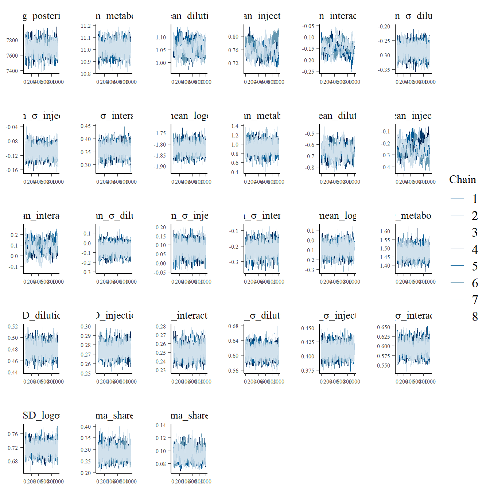
p12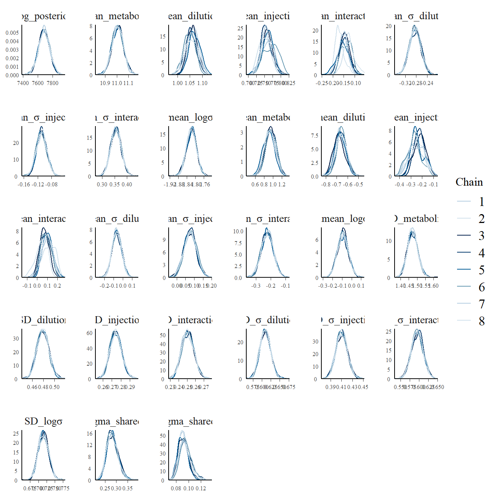
# bayesplot::mcmc_trace(draws_df, pars = c("mean_injection"))
ggsave(filename = here::here(figures_dir, "trace-plots.png"), plot = p11, width = 40, height = 15, dpi = 600, units = "cm")
ggsave(filename = here::here(figures_dir, "density-plots.png"), plot = p12, width = 40, height = 15, dpi = 600, units = "cm")pars = c("mean_dilution", "mean_injection", "mean_dilution_injection_interaction",
"mean_sigma_dilution", "mean_sigma_injection",
"mean_sigma_dilution_injection_interaction",
"dmean_dilution", "dmean_injection", "dmean_dilution_injection_interaction",
"dmean_sigma_dilution", "dmean_sigma_injection",
"dmean_sigma_dilution_injection_interaction",
"sd_dilution", "sd_injection", "sd_dilution_injection_interaction",
"sd_sigma_dilution", "sd_sigma_injection",
"sd_sigma_dilution_injection_interaction",
"sd_log_sigma")
draws_df <- as_draws_df(model_to_plot$draws(pars))
parameter_labels2 <- intersect(names(draws_df), names(parameter_labels1))
draws_df <- draws_df %>%
rename_with(~ parameter_labels1[.x], .cols = parameter_labels2)
new_pars <- parameter_labels1[pars]
p21 = bayesplot::mcmc_areas(draws_df, pars = new_pars)
ggsave(filename = here::here(figures_dir, "parameter-interval-plots.png"), plot = p21, width = 12, height = 10, dpi = 600, units = "cm")
p21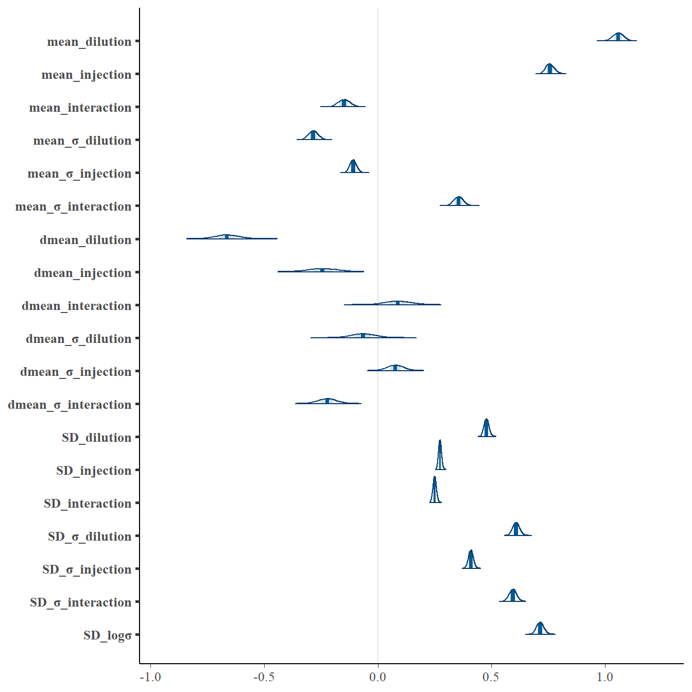
gc() used (Mb) gc trigger (Mb) max used (Mb)
Ncells 2194047 117.2 3778572 201.8 3778572 201.8
Vcells 815581233 6222.4 2612885227 19934.8 2720011135 20752.1p301 <- posterior::as_draws_df(model_to_plot$draws("r_metabolite")) %>%
spread_draws(r_metabolite[metabolite_number]) %>%
ungroup() %>%
mutate(ionization_mode = if_else(metabolite_number <= 184,
"positive", "negative")) %>%
ggplot(aes(x = r_metabolite, fill = ionization_mode)) +
geom_histogram(bins = 40, alpha = 0.6, position = "identity") +
labs(x = expression("metabolite intercept"),
y = "count") +
theme(panel.grid = element_blank(),
axis.ticks.y = element_blank(),
axis.text.y = element_text(hjust = 1, size = 10),
legend.position = "none")
p302 <- posterior::as_draws_df(model_to_plot$draws("r_metabolite")) %>%
spread_draws(r_metabolite[metabolite_number]) %>%
ungroup() %>%
mutate(ionization_mode = if_else(metabolite_number <= 184,
"positive", "negative")) %>%
ggplot(aes(x = ionization_mode, y = r_metabolite, fill = ionization_mode)) +
geom_violin(alpha = 0.6, trim = FALSE) +
geom_boxplot(width = 0.1, outlier.size = 0.5) +
labs(x = NULL, y = expression("metabolite intercept")) +
theme(panel.grid = element_blank(),
axis.ticks.y = element_blank(),
axis.text.y = element_text(hjust = 1, size = 10))
p30 <- p301 + p302 + plot_layout(ncol = 2, widths = c(2, 1))
ggsave(filename = here::here(figures_dir, "metabolite-intercepts.png"),
plot = p30, width = 14, height = 10, dpi = 2000, units = "cm")
p30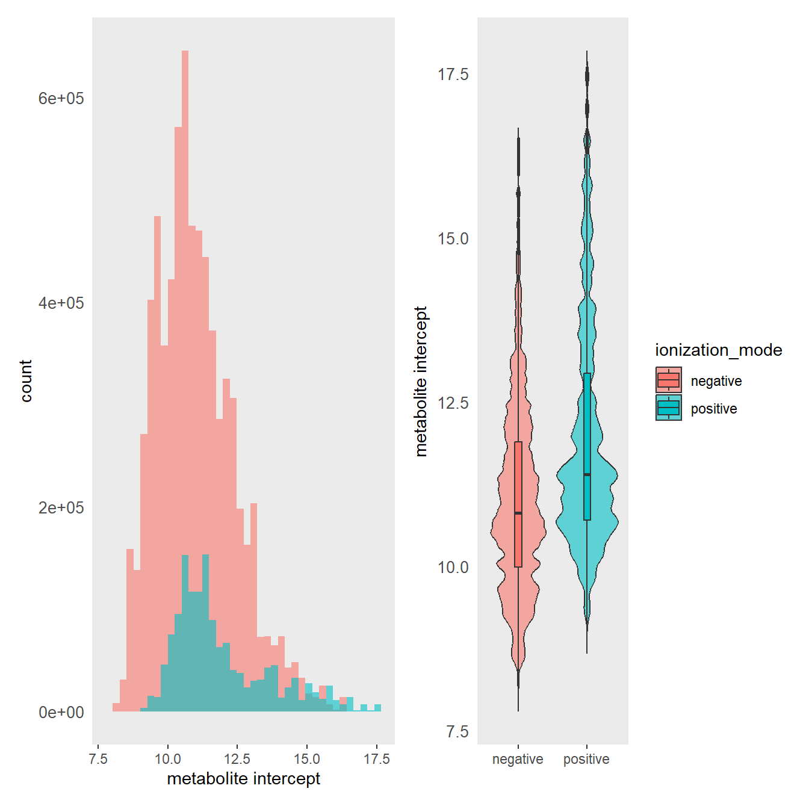
gc() used (Mb) gc trigger (Mb) max used (Mb)
Ncells 2267682 121.2 3778572 201.8 3778572 201.8
Vcells 887029393 6767.5 2612885227 19934.8 2720011135 20752.1p31 <- posterior::as_draws_df(model_to_plot$draws("r_metabolite")) %>%
spread_draws(r_metabolite[metabolite_number]) %>%
ungroup() %>%
mutate(ionization_mode = if_else(metabolite_number <= 184,
"positive", "negative")) %>%
ggplot(aes(x = r_metabolite, y = reorder(metabolite_number, r_metabolite),
color = ionization_mode)) +
stat_pointinterval(.width = 0.5, size = 2/3) +
labs(x = expression("metabolite intercept"),
y = "metabolite number") +
theme(panel.grid = element_blank(),
axis.ticks.y = element_blank(),
axis.text.y = element_text(hjust = 1, size = 2))
ggsave(filename = here::here(figures_dir, "individual-metabolite-intercepts.png"),
plot = p31, width = 12, height = 10, dpi = 2000, units = "cm")
p31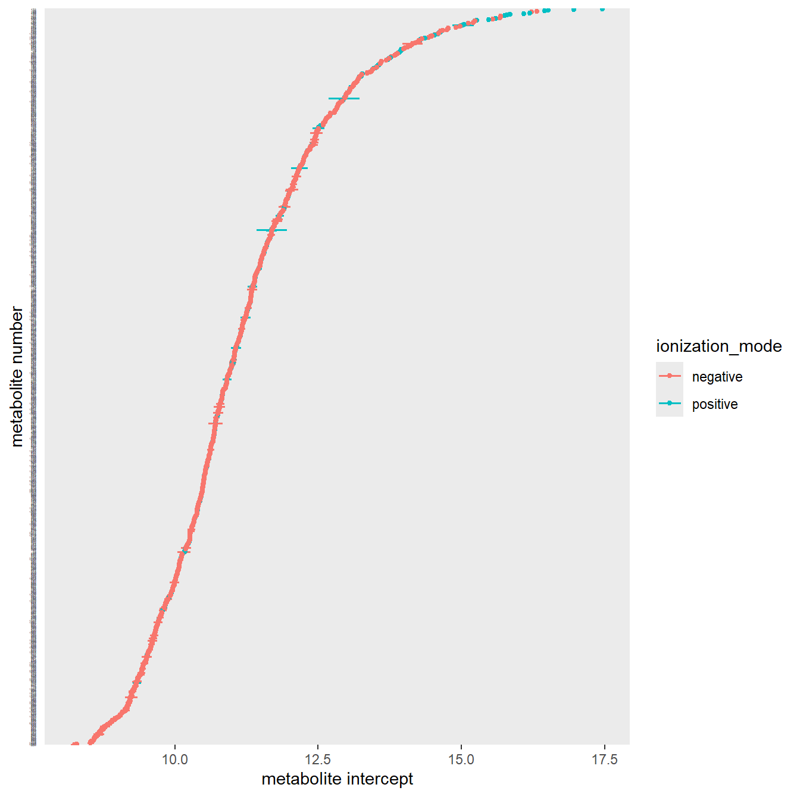
gc() used (Mb) gc trigger (Mb) max used (Mb)
Ncells 2348124 125.5 3778572 201.8 3778572 201.8
Vcells 923418303 7045.2 2612885227 19934.8 2720011135 20752.1p321 <- posterior::as_draws_df(model_to_plot$draws("r_dilution")) %>%
spread_draws(r_dilution[metabolite_number]) %>%
ungroup() %>%
mutate(ionization_mode = if_else(metabolite_number <= 184,
"positive", "negative")) %>%
ggplot(aes(x = r_dilution, fill = ionization_mode)) +
geom_histogram(bins = 40, alpha = 0.6, position = "identity") +
labs(x = expression("dilution slopes"),
y = "count") +
theme(panel.grid = element_blank(),
axis.ticks.y = element_blank(),
axis.text.y = element_text(hjust = 1, size = 10),
legend.position = "none")
p322 <- posterior::as_draws_df(model_to_plot$draws("r_dilution")) %>%
spread_draws(r_dilution[metabolite_number]) %>%
ungroup() %>%
mutate(ionization_mode = if_else(metabolite_number <= 184,
"positive", "negative")) %>%
ggplot(aes(x = ionization_mode, y = r_dilution, fill = ionization_mode)) +
geom_violin(alpha = 0.6, trim = FALSE) +
geom_boxplot(width = 0.1, outlier.size = 0.5) +
labs(x = NULL, y = expression("dilution slopes")) +
theme(panel.grid = element_blank(),
axis.ticks.y = element_blank(),
axis.text.y = element_text(hjust = 1, size = 10))
p32 <- p321 + p322 + plot_layout(ncol = 2, widths = c(2, 1))
ggsave(filename = here::here(figures_dir, "dilution-slopes.png"),
plot = p32, width = 12, height = 10, dpi = 2000, units = "cm")
p32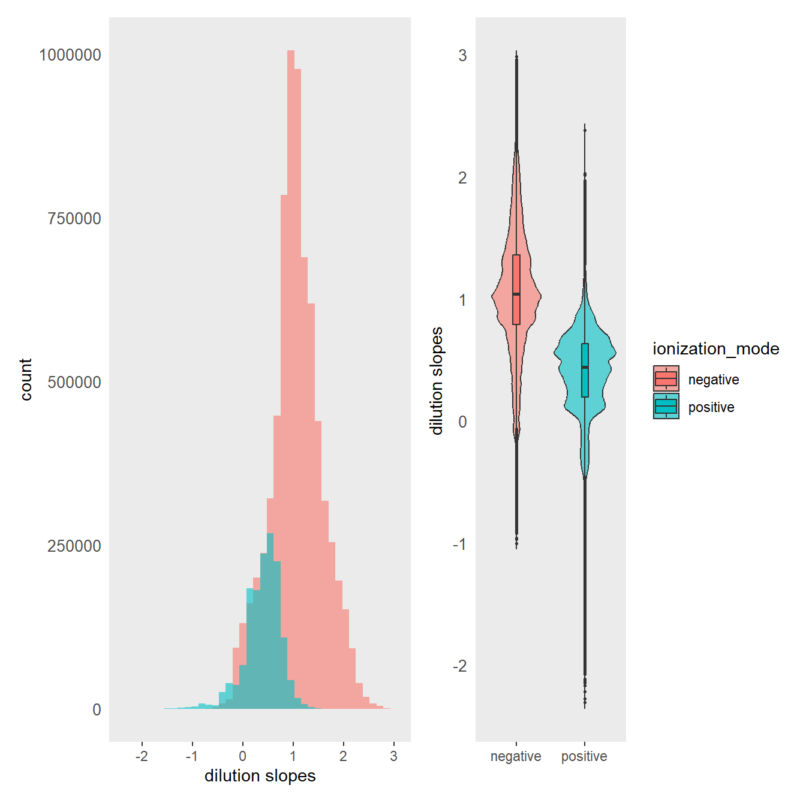
gc() used (Mb) gc trigger (Mb) max used (Mb)
Ncells 2383051 127.3 3778572 201.8 3778572 201.8
Vcells 995278640 7593.4 2614861912 19949.9 2720011135 20752.1p33 <- posterior::as_draws_df(model_to_plot$draws("r_dilution")) %>%
spread_draws(r_dilution[metabolite_number]) %>%
ungroup() %>%
mutate(ionization_mode = if_else(metabolite_number <= 184,
"positive", "negative")) %>%
ggplot(aes(x = r_dilution, y = reorder(metabolite_number, r_dilution),
color = ionization_mode)) +
stat_pointinterval(.width = .5, size = 2/3) +
labs(x = expression("dilution slopes"),
y = "metabolite number") +
theme(panel.grid = element_blank(),
axis.ticks.y = element_blank(),
axis.text.y = element_text(hjust = 1, size = 2))
ggsave(filename = here::here(figures_dir, "individual-dilution-slopes.png"),
plot = p33, width = 12, height = 10, dpi = 2000, units = "cm")
p33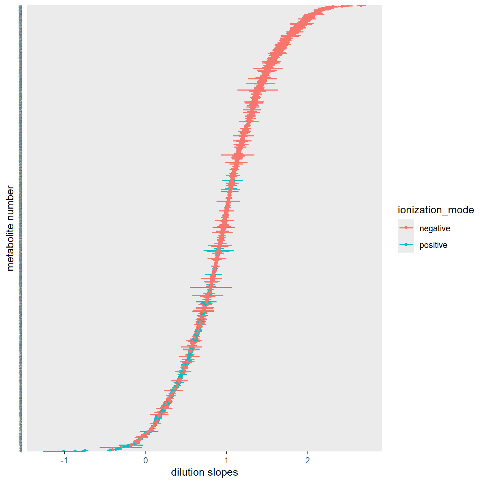
gc() used (Mb) gc trigger (Mb) max used (Mb)
Ncells 2403417 128.4 3778572 201.8 3778572 201.8
Vcells 1031679330 7871.1 2614861912 19949.9 2720011135 20752.1p341 <- posterior::as_draws_df(model_to_plot$draws("r_log_sigma")) %>%
spread_draws(r_log_sigma[metabolite_number]) %>%
ungroup() %>%
mutate(ionization_mode = if_else(metabolite_number <= 184,
"positive", "negative")) %>%
ggplot(aes(x = r_log_sigma, fill = ionization_mode)) +
geom_histogram(bins = 40, alpha = 0.6, position = "identity") +
labs(x = expression("log sigma"),
y = "count") +
theme(panel.grid = element_blank(),
axis.ticks.y = element_blank(),
axis.text.y = element_text(hjust = 0, size = 10),
legend.position = "none")
p342 <- posterior::as_draws_df(model_to_plot$draws("r_log_sigma")) %>%
spread_draws(r_log_sigma[metabolite_number]) %>%
ungroup() %>%
mutate(ionization_mode = if_else(metabolite_number <= 184,
"positive", "negative")) %>%
ggplot(aes(x = ionization_mode, y = r_log_sigma, fill = ionization_mode)) +
geom_violin(alpha = 0.6, trim = FALSE) +
geom_boxplot(width = 0.1, outlier.size = 0.5) +
labs(x = NULL, y = expression("log sigma")) +
theme(panel.grid = element_blank(),
axis.ticks.y = element_blank(),
axis.text.y = element_text(hjust = 1, size = 10))
p34 <- p341 + p342 + plot_layout(ncol = 2, widths = c(2, 1))
ggsave(filename = here::here(figures_dir, "log-sigma.png"),
plot = p34, width = 12, height = 10, dpi = 2000, units = "cm")
p34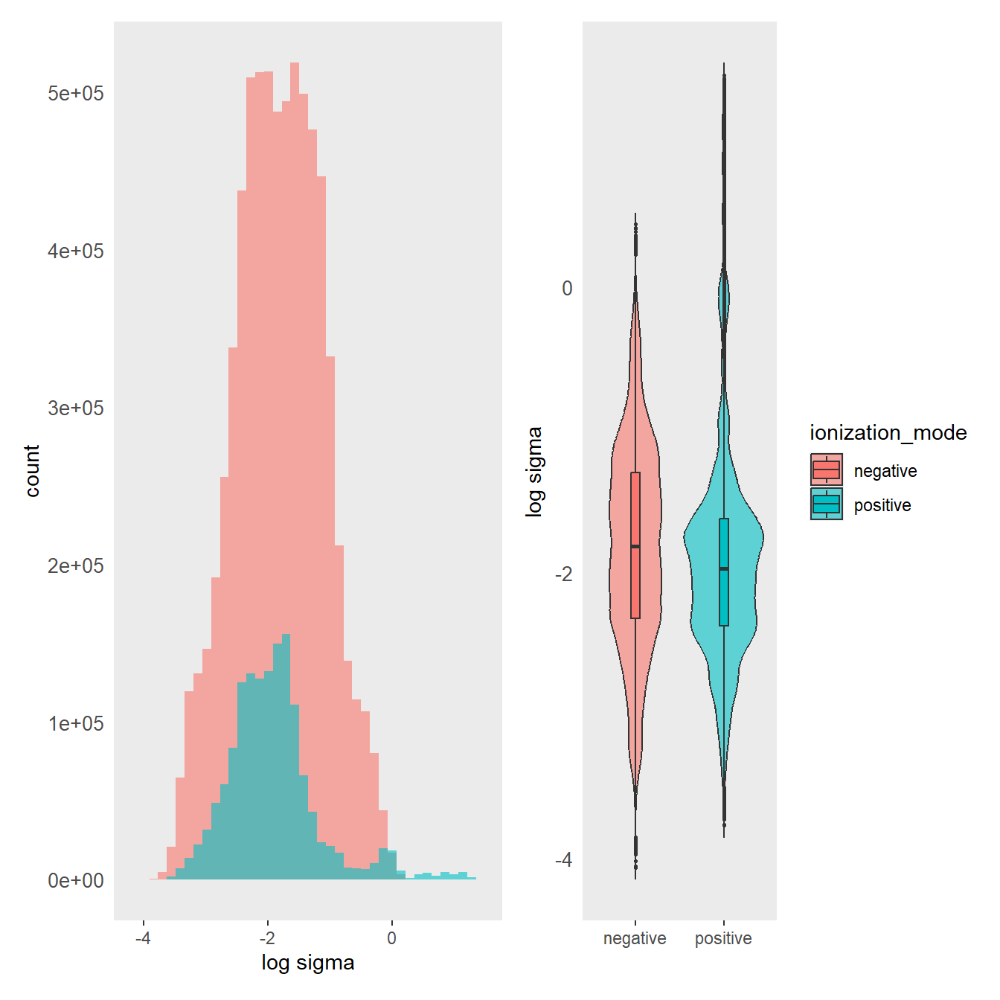
gc() used (Mb) gc trigger (Mb) max used (Mb)
Ncells 2438027 130.3 3778572 201.8 3778572 201.8
Vcells 1100844321 8398.8 2618969132 19981.2 2720011135 20752.1p35 <- posterior::as_draws_df(model_to_plot$draws("r_log_sigma")) %>%
spread_draws(r_log_sigma[metabolite_number]) %>%
ungroup() %>%
mutate(ionization_mode = if_else(metabolite_number <= 184,
"positive", "negative")) %>%
ggplot(aes(x = r_log_sigma, y = reorder(metabolite_number, r_log_sigma),
color = ionization_mode)) +
stat_pointinterval(.width = .5, size = 2/3) +
labs(x = expression("log sigma"),
y = "metabolite number") +
theme(panel.grid = element_blank(),
axis.ticks.y = element_blank(),
axis.text.y = element_text(hjust = 0, size = 2))
ggsave(filename = here::here(figures_dir, "individual-log-sigma.png"),
plot = p35, width = 12, height = 10, dpi = 2000, units = "cm")
p35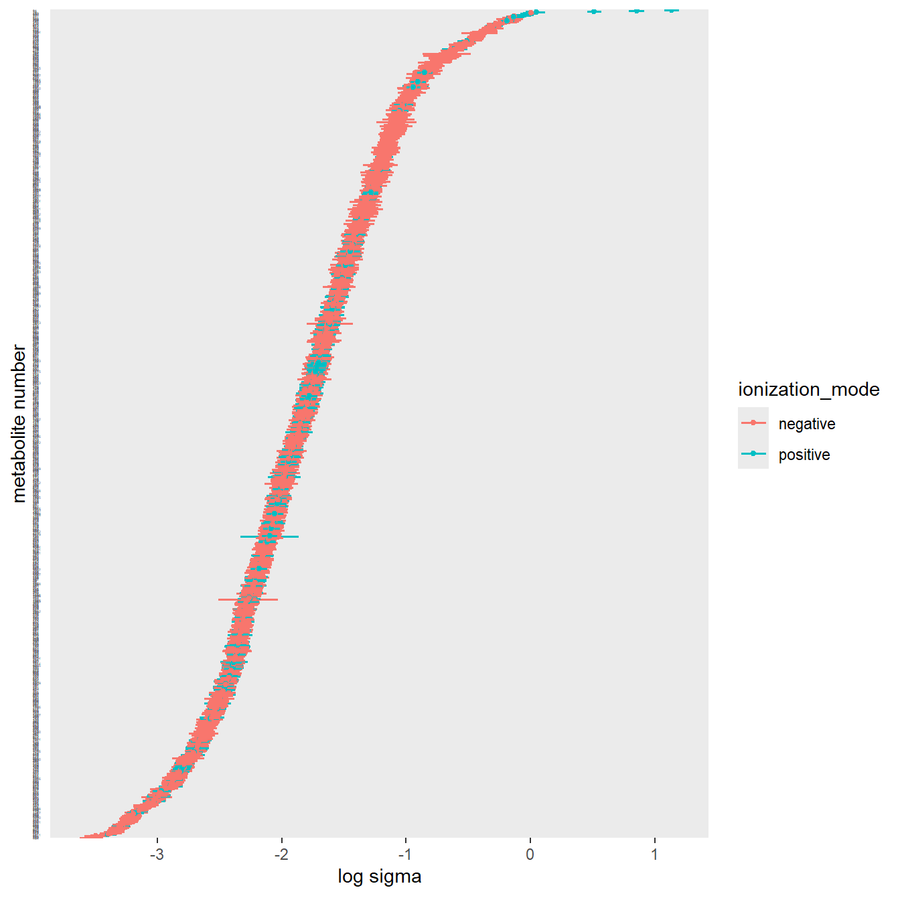
gc() used (Mb) gc trigger (Mb) max used (Mb)
Ncells 2458314 131.3 3778572 201.8 3778572 201.8
Vcells 1136236919 8668.8 2618969132 19981.2 2720011135 20752.1p361 <- posterior::as_draws_df(model_to_plot$draws("r_nu")) %>%
spread_draws(r_nu[metabolite_number]) %>%
ungroup() %>%
mutate(ionization_mode = if_else(metabolite_number <= 184,
"positive", "negative")) %>%
ggplot(aes(x = r_nu, fill = ionization_mode)) +
geom_histogram(bins = 40, alpha = 0.6, position = "identity") +
labs(x = expression("nu"),
y = "count") +
theme(panel.grid = element_blank(),
axis.ticks.y = element_blank(),
axis.text.y = element_text(hjust = 0, size = 10),
legend.position = "none")
p362 <- posterior::as_draws_df(model_to_plot$draws("r_nu")) %>%
spread_draws(r_nu[metabolite_number]) %>%
ungroup() %>%
mutate(ionization_mode = if_else(metabolite_number <= 184,
"positive", "negative")) %>%
ggplot(aes(x = ionization_mode, y = r_nu, fill = ionization_mode)) +
geom_violin(alpha = 0.6, trim = FALSE) +
geom_boxplot(width = 0.1, outlier.size = 0.5) +
labs(x = NULL, y = expression("nu")) +
theme(panel.grid = element_blank(),
axis.ticks.y = element_blank(),
axis.text.y = element_text(hjust = 1, size = 10))
p36 <- p361 + p362 + plot_layout(ncol = 2, widths = c(2, 1))
ggsave(filename = here::here(figures_dir, "nu.png"),
plot = p36, width = 12, height = 10, dpi = 2000, units = "cm")
p36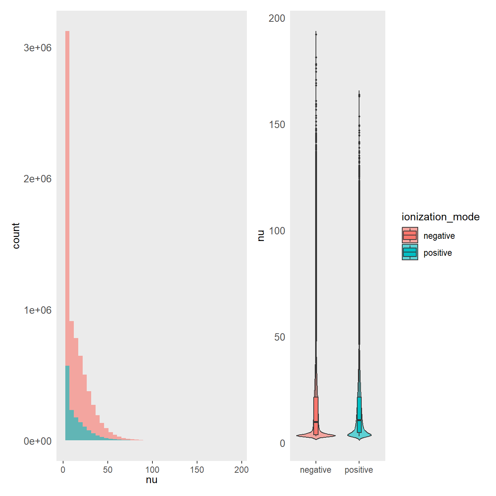
gc() used (Mb) gc trigger (Mb) max used (Mb)
Ncells 2493243 133.2 3778572 201.8 3778572 201.8
Vcells 1209099755 9224.7 2618969132 19981.2 2720011135 20752.1p37 <- posterior::as_draws_df(model_to_plot$draws("r_nu")) %>%
spread_draws(r_nu[metabolite_number]) %>%
mutate(ionization_mode = if_else(metabolite_number <= 184,
"positive", "negative")) %>%
ungroup() %>%
ggplot(aes(x = r_nu, y = reorder(metabolite_number, r_nu),
color = ionization_mode)) +
stat_pointinterval(.width = .5, size = 2/3) +
labs(x = expression("nu"),
y = "metabolite number") +
theme(panel.grid = element_blank(),
axis.ticks.y = element_blank(),
axis.text.y = element_text(hjust = 0, size = 2))
ggsave(filename = here::here(figures_dir, "individual-nu.png"),
plot = p37, width = 12, height = 10, dpi = 2000, units = "cm")
p37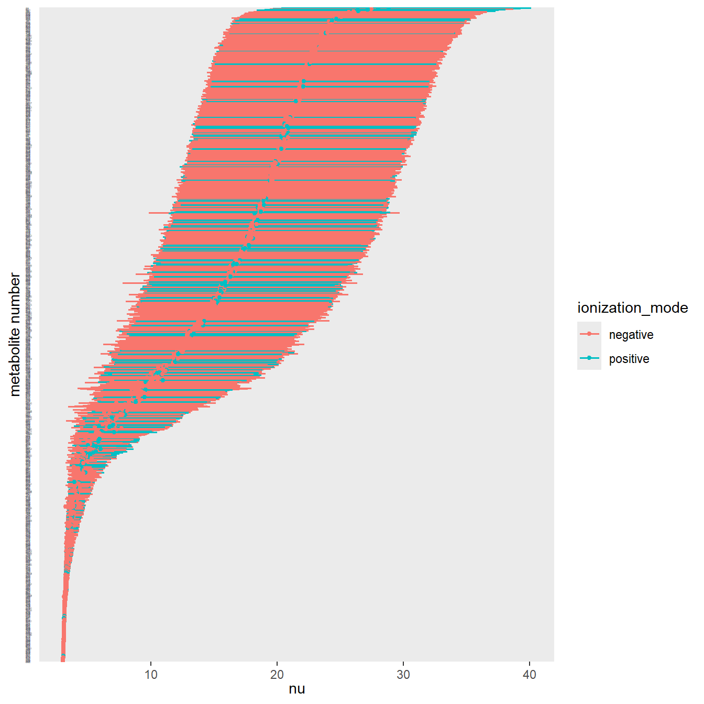
gc() used (Mb) gc trigger (Mb) max used (Mb)
Ncells 2513501 134.3 3778572 201.8 3778572 201.8
Vcells 1245836906 9505.0 2618969132 19981.2 2720011135 20752.1p381 <- posterior::as_draws_df(model_to_plot$draws("r_injection")) %>%
spread_draws(r_injection[metabolite_number]) %>%
ungroup() %>%
mutate(ionization_mode = if_else(metabolite_number <= 184,
"positive", "negative")) %>%
ggplot(aes(x = r_injection, fill = ionization_mode)) +
geom_histogram(bins = 40, alpha = 0.6, position = "identity") +
labs(x = expression("injection slopes"),
y = "count") +
theme(panel.grid = element_blank(),
axis.ticks.y = element_blank(),
axis.text.y = element_text(hjust = 0, size = 10),
legend.position = "none")
p382 <- posterior::as_draws_df(model_to_plot$draws("r_injection")) %>%
spread_draws(r_injection[metabolite_number]) %>%
ungroup() %>%
mutate(ionization_mode = if_else(metabolite_number <= 184,
"positive", "negative")) %>%
ggplot(aes(x = ionization_mode, y = r_injection, fill = ionization_mode)) +
geom_violin(alpha = 0.6, trim = FALSE) +
geom_boxplot(width = 0.1, outlier.size = 0.5) +
labs(x = NULL, y = expression("injection slopes")) +
theme(panel.grid = element_blank(),
axis.ticks.y = element_blank(),
axis.text.y = element_text(hjust = 1, size = 10))
p38 <- p381 + p382 + plot_layout(ncol = 2, widths = c(2, 1))
ggsave(filename = here::here(figures_dir, "injection-slopes.png"),
plot = p38, width = 12, height = 10, dpi = 2000, units = "cm")
p38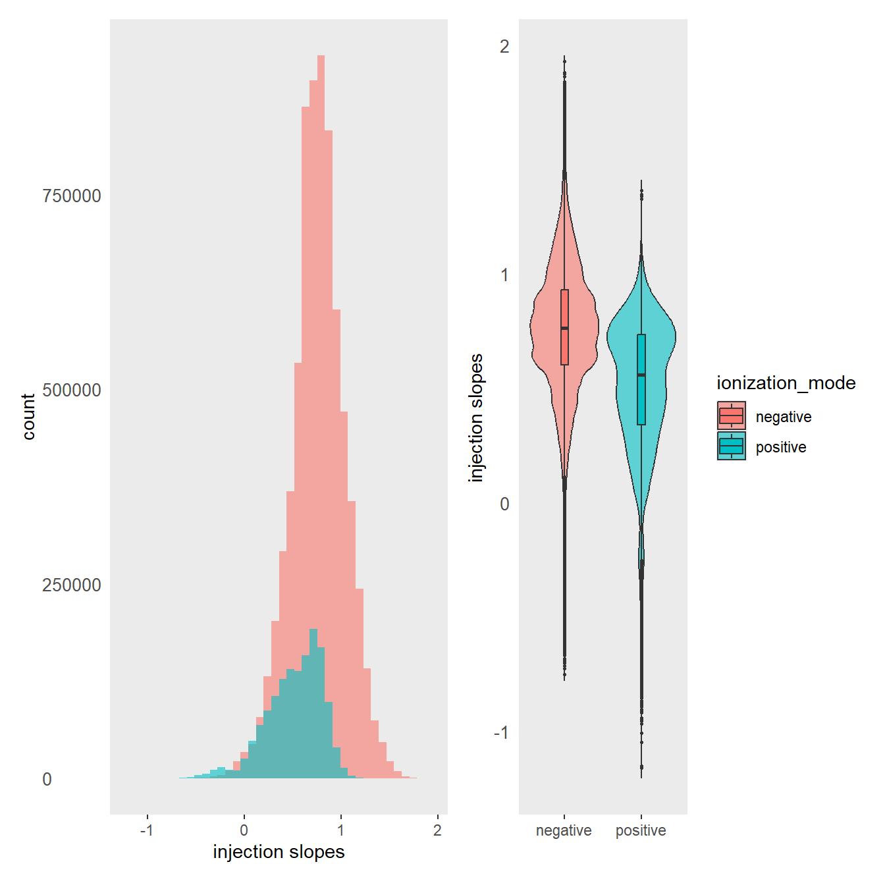
gc() used (Mb) gc trigger (Mb) max used (Mb)
Ncells 2548220 136.1 3778572 201.8 3778572 201.8
Vcells 1316118618 10041.2 2618969132 19981.2 2720011135 20752.1p39 <- posterior::as_draws_df(model_to_plot$draws("r_injection")) %>%
spread_draws(r_injection[metabolite_number]) %>%
ungroup() %>%
mutate(ionization_mode = if_else(metabolite_number <= 184,
"positive", "negative")) %>%
ggplot(aes(x = r_injection, y = reorder(metabolite_number, r_injection),
color = ionization_mode)) +
stat_pointinterval(.width = .5, size = 2/3) +
labs(x = expression("injection slopes"),
y = "metabolite number") +
theme(panel.grid = element_blank(),
axis.ticks.y = element_blank(),
axis.text.y = element_text(hjust = 0, size = 2))
ggsave(filename = here::here(figures_dir, "individual-injection-slopes.png"),
plot = p39, width = 12, height = 10, dpi = 2000, units = "cm")
p39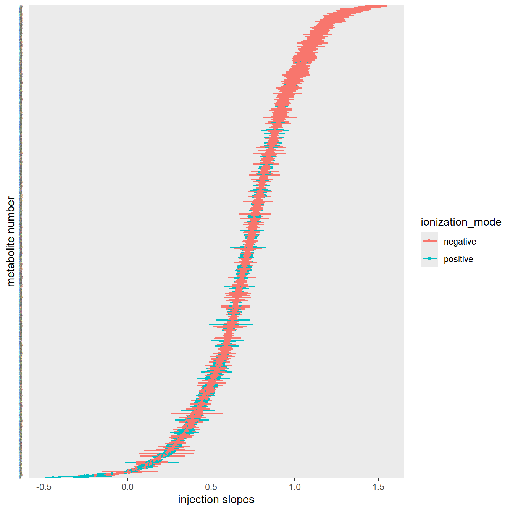
gc() used (Mb) gc trigger (Mb) max used (Mb)
Ncells 2568533 137.2 4574286 244.3 4574286 244.3
Vcells 1352237888 10316.8 2618969132 19981.2 2720011135 20752.1ptest <- posterior::as_draws_df(model_to_plot$draws("r_chrom")) %>%
spread_draws(r_chrom[y,posneg]) %>%
ungroup()%>%
ggplot(aes(y = r_chrom, x = as.factor(y))) +
stat_pointinterval(.width = 0.5, size = 2/3) +
labs(x = expression("var"),
y = "chrom number") +
facet_wrap(~posneg)+
theme(panel.grid = element_blank(),
axis.ticks.y = element_blank(),
axis.text.y = element_text(hjust = 1, size = 4))
ptest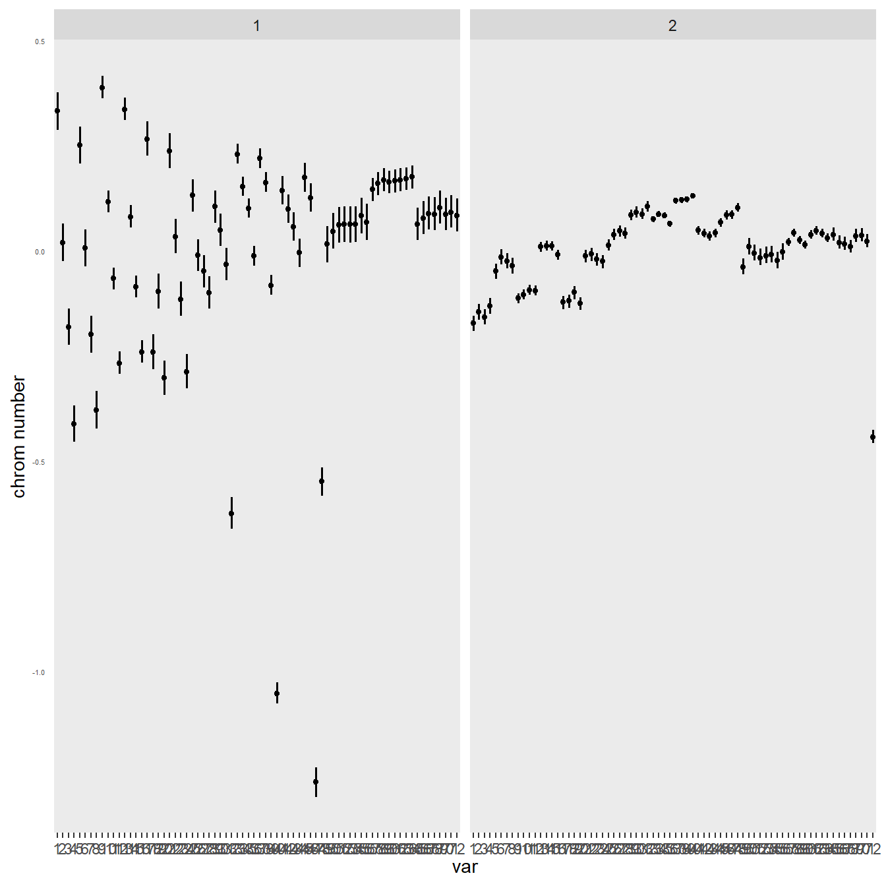
gc() used (Mb) gc trigger (Mb) max used (Mb)
Ncells 2316355 123.8 4574286 244.3 4574286 244.3
Vcells 1341629192 10235.9 2618969132 19981.2 2720011135 20752.1p411 <- posterior::as_draws_df(model_to_plot$draws("r_dilution_injection_interaction")) %>%
spread_draws(r_dilution_injection_interaction[metabolite_number]) %>%
ungroup() %>%
mutate(ionization_mode = if_else(metabolite_number <= 184,
"positive", "negative")) %>%
ggplot(aes(x = r_dilution_injection_interaction, fill = ionization_mode)) +
geom_histogram(bins = 40, alpha = 0.6, position = "identity") +
labs(x = expression("dilution and injection interaction slopes"),
y = "count") +
theme(panel.grid = element_blank(),
axis.ticks.y = element_blank(),
axis.text.y = element_text(hjust = 0, size = 10),
legend.position = "none")
p412 <- posterior::as_draws_df(model_to_plot$draws("r_dilution_injection_interaction")) %>%
spread_draws(r_dilution_injection_interaction[metabolite_number]) %>%
ungroup() %>%
mutate(ionization_mode = if_else(metabolite_number <= 184,
"positive", "negative")) %>%
ggplot(aes(x = ionization_mode, y = r_dilution_injection_interaction, fill = ionization_mode)) +
geom_violin(alpha = 0.6, trim = FALSE) +
geom_boxplot(width = 0.1, outlier.size = 0.5) +
labs(x = NULL, y = expression("dilution and injection interaction slopes")) +
theme(panel.grid = element_blank(),
axis.ticks.y = element_blank(),
axis.text.y = element_text(hjust = 1, size = 10))
p41 <- p411 + p412 + plot_layout(ncol = 2, widths = c(2, 1))
ggsave(filename = here::here(figures_dir, "dilution-injection-interaction-slopes.png"),
plot = p41, width = 12, height = 10, dpi = 2000, units = "cm")
p41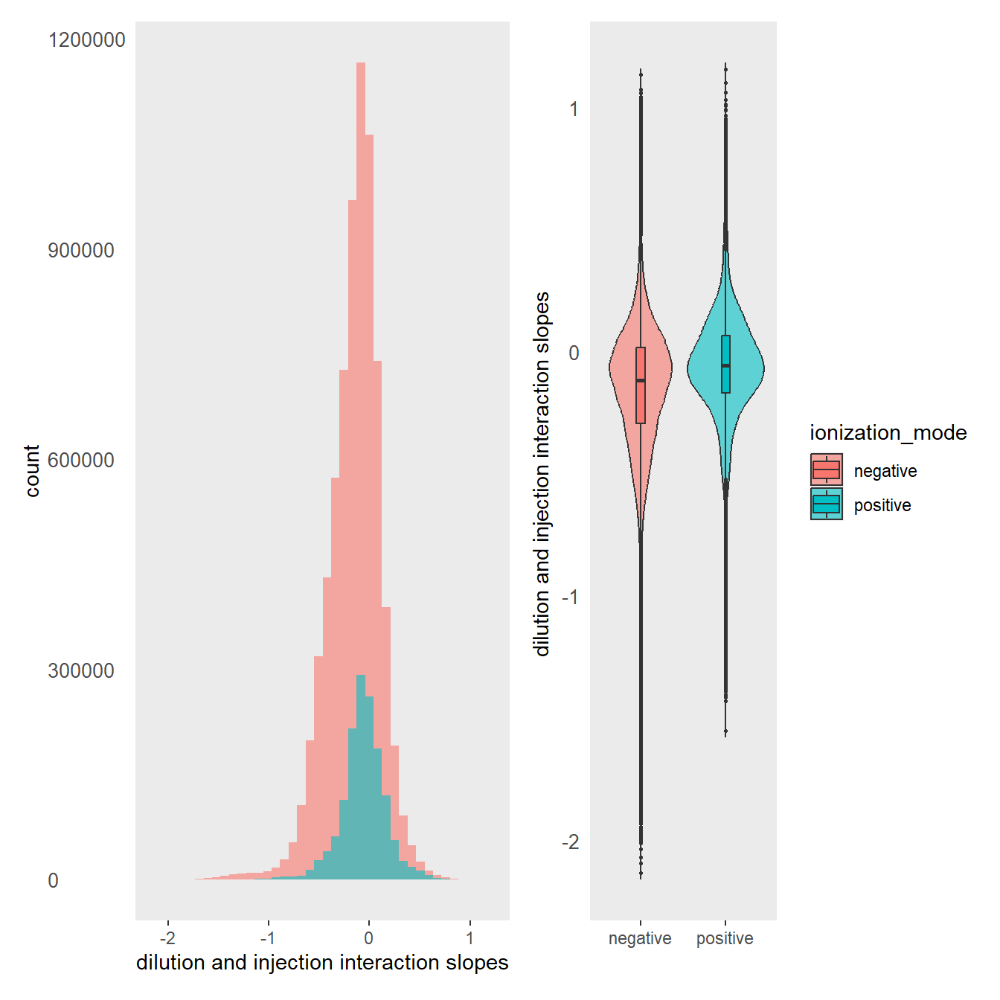
gc() used (Mb) gc trigger (Mb) max used (Mb)
Ncells 2336409 124.8 4574286 244.3 4574286 244.3
Vcells 1414332303 10790.5 2621402846 19999.8 2720011135 20752.1p42 <- posterior::as_draws_df(model_to_plot$draws("r_dilution_injection_interaction")) %>%
spread_draws(r_dilution_injection_interaction[metabolite_number]) %>%
ungroup() %>%
mutate(ionization_mode = if_else(metabolite_number <= 184,
"positive", "negative")) %>%
ggplot(aes(x = r_dilution_injection_interaction,
y = reorder(metabolite_number, r_dilution_injection_interaction),
color = ionization_mode)) +
stat_pointinterval(.width = .5, size = 2/3) +
labs(x = expression("dilution and injection interaction slopes"),
y = "metabolite number") +
theme(panel.grid = element_blank(),
axis.ticks.y = element_blank(),
axis.text.y = element_text(hjust = 0, size = 2))
ggsave(filename = here::here(figures_dir, "individual-dilution-injection-interaction-slopes.png"), plot = p42, width = 12, height = 10, dpi = 2000, units = "cm")
p42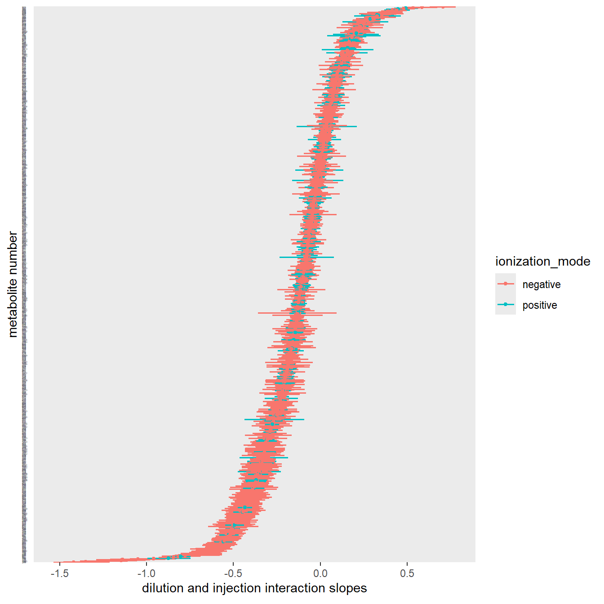
gc() used (Mb) gc trigger (Mb) max used (Mb)
Ncells 2375880 126.9 4574286 244.3 4574286 244.3
Vcells 1450789293 11068.7 2621402846 19999.8 2720011135 20752.1p431<-posterior::as_draws_df(model_to_plot$draws("r_metabolite")) %>%
spread_draws(r_metabolite[metabolite_number]) %>%
ungroup() %>%
mutate(ionization_mode = if_else(metabolite_number <= 184,
"positive", "negative")) %>%
group_by(metabolite_number, ionization_mode) %>%
summarise(mean_mu = mean(r_metabolite)) %>%
ggplot(aes(x = mean_mu, fill = ionization_mode)) +
geom_histogram(alpha = 0.2, position = "identity") +
labs(x = expression("metabolite intercepts"))
p432<-posterior::as_draws_df(model_to_plot$draws("r_dilution")) %>%
spread_draws(r_dilution[metabolite_number]) %>%
ungroup() %>%
mutate(ionization_mode = if_else(metabolite_number <= 184,
"positive", "negative")) %>%
group_by(metabolite_number, ionization_mode) %>%
summarise(mean_mu = mean(r_dilution)) %>%
ggplot(aes(x = mean_mu, fill = ionization_mode)) +
geom_histogram(alpha = 0.2, position = "identity") +
labs(x = expression("dilution slopes"))
p433<-posterior::as_draws_df(model_to_plot$draws("r_injection")) %>%
spread_draws(r_injection[metabolite_number]) %>%
ungroup() %>%
mutate(ionization_mode = if_else(metabolite_number <= 184,
"positive", "negative")) %>%
group_by(metabolite_number, ionization_mode) %>%
summarise(mean_mu = mean(r_injection)) %>%
ggplot(aes(x = mean_mu, fill = ionization_mode)) +
geom_histogram(alpha = 0.2, position = "identity") +
labs(x = expression("injection slopes"))
p434<-posterior::as_draws_df(model_to_plot$draws("r_dilution_injection_interaction")) %>%
spread_draws(r_dilution_injection_interaction[metabolite_number]) %>%
ungroup() %>%
mutate(ionization_mode = if_else(metabolite_number <= 184,
"positive", "negative")) %>%
group_by(metabolite_number, ionization_mode) %>%
summarise(mean_mu = mean(r_dilution_injection_interaction)) %>%
ggplot(aes(x = mean_mu, fill = ionization_mode)) +
geom_histogram(alpha = 0.2, position = "identity") +
labs(x = expression("dilution and injection interaction slopes"))
p441<-posterior::as_draws_df(model_to_plot$draws("r_log_sigma")) %>%
spread_draws(r_log_sigma[metabolite_number]) %>%
ungroup() %>%
mutate(ionization_mode = if_else(metabolite_number <= 184,
"positive", "negative")) %>%
group_by(metabolite_number, ionization_mode) %>%
summarise(mean_mu = mean(r_log_sigma)) %>%
ggplot(aes(x = mean_mu, fill = ionization_mode)) +
geom_histogram(alpha = 0.2, position = "identity") +
labs(x = expression("logsigmas"))
p442<-posterior::as_draws_df(model_to_plot$draws("r_nu")) %>%
spread_draws(r_nu[metabolite_number]) %>%
ungroup() %>%
mutate(ionization_mode = if_else(metabolite_number <= 184,
"positive", "negative")) %>%
group_by(metabolite_number, ionization_mode) %>%
summarise(mean_mu = mean(r_nu)) %>%
ggplot(aes(x = mean_mu, fill = ionization_mode)) +
geom_histogram(alpha = 0.2, position = "identity") +
labs(x = expression("nu"))
p443<-posterior::as_draws_df(model_to_plot$draws("r_sigma_dilution")) %>%
spread_draws(r_sigma_dilution[metabolite_number]) %>%
ungroup() %>%
mutate(ionization_mode = if_else(metabolite_number <= 184,
"positive", "negative")) %>%
group_by(metabolite_number, ionization_mode) %>%
summarise(mean_mu = mean(r_sigma_dilution)) %>%
ggplot(aes(x = mean_mu, fill = ionization_mode)) +
geom_histogram(alpha = 0.2, position = "identity") +
labs(x = expression("dilution sigmas"))
p444<-posterior::as_draws_df(model_to_plot$draws("r_sigma_injection")) %>%
spread_draws(r_sigma_injection[metabolite_number]) %>%
ungroup() %>%
mutate(ionization_mode = if_else(metabolite_number <= 184,
"positive", "negative")) %>%
group_by(metabolite_number, ionization_mode) %>%
summarise(mean_mu = mean(r_sigma_injection)) %>%
ggplot(aes(x = mean_mu, fill = ionization_mode)) +
geom_histogram(alpha = 0.2, position = "identity") +
labs(x = expression("injection sigmas"))
p445<-posterior::as_draws_df(model_to_plot$draws("r_sigma_dilution_injection_interaction")) %>%
spread_draws(r_sigma_dilution_injection_interaction[metabolite_number]) %>%
ungroup() %>%
mutate(ionization_mode = if_else(metabolite_number <= 184,
"positive", "negative")) %>%
group_by(metabolite_number, ionization_mode) %>%
summarise(mean_mu = mean(r_sigma_dilution_injection_interaction)) %>%
ggplot(aes(x = mean_mu, fill = ionization_mode)) +
geom_histogram(alpha = 0.2, position = "identity") +
labs(x = expression("dilution and injection interaction sigmas"))
p43 <- (p431 + p432)/(p433 + p434) + plot_layout(guides = 'collect')
p44 <- (p441 + p442 + p443)/(p444 + p445) + plot_layout(guides = 'collect')
ggsave(filename = here::here(figures_dir, "individual-histograms-main.png"),
plot = p43, width = 16, height = 16, dpi = 600, units = "cm")
ggsave(filename = here::here(figures_dir, "individual-histograms-rest.png"),
plot = p44, width = 16, height = 16, dpi = 600, units = "cm")
p43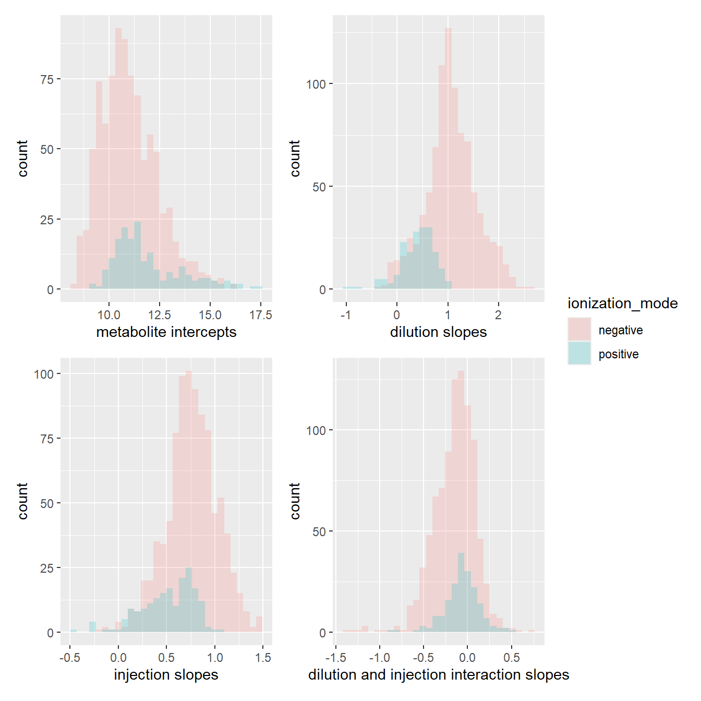
p44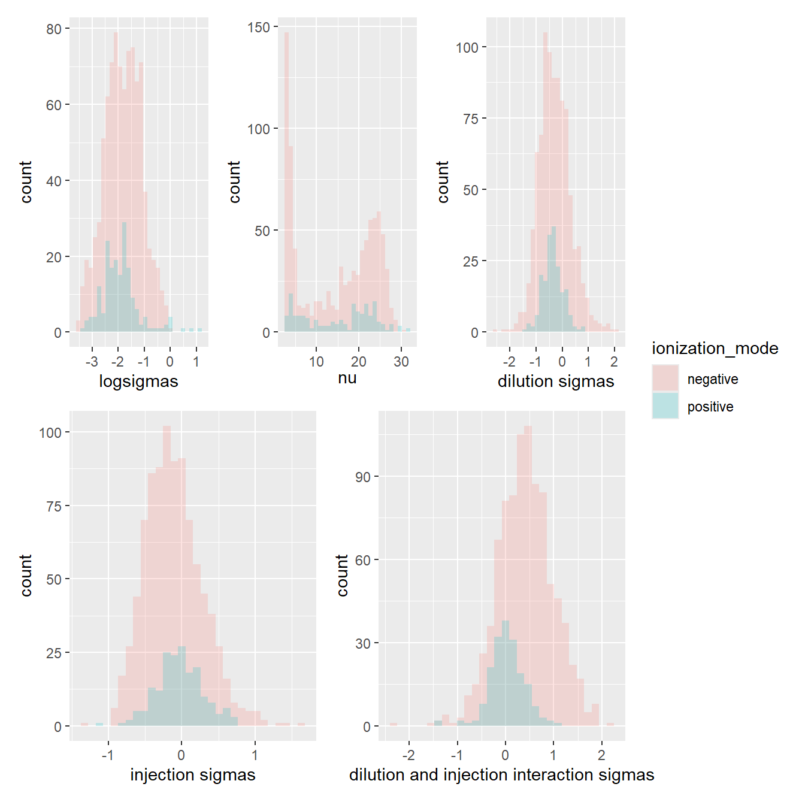
data51<-posterior::as_draws_df(model_to_plot$draws("r_metabolite")) %>%
spread_draws(r_metabolite[metabolite_number]) %>%
ungroup() %>%
group_by(metabolite_number) %>%
summarise(mean_metabolite = mean(r_metabolite))
data52<-posterior::as_draws_df(model_to_plot$draws("r_dilution")) %>%
spread_draws(r_dilution[metabolite_number]) %>%
ungroup() %>%
group_by(metabolite_number) %>%
summarise(mean_dilution = mean(r_dilution))
data53<-posterior::as_draws_df(model_to_plot$draws("r_injection")) %>%
spread_draws(r_injection[metabolite_number]) %>%
ungroup() %>%
group_by(metabolite_number) %>%
summarise(mean_injection = mean(r_injection))
data54<-posterior::as_draws_df(model_to_plot$draws("r_dilution_injection_interaction")) %>%
spread_draws(r_dilution_injection_interaction[metabolite_number]) %>%
ungroup() %>%
group_by(metabolite_number) %>%
summarise(mean_interaction = mean(r_dilution_injection_interaction))
data55<-posterior::as_draws_df(model_to_plot$draws("r_log_sigma")) %>%
spread_draws(r_log_sigma[metabolite_number]) %>%
ungroup() %>%
group_by(metabolite_number) %>%
summarise(mean_log_sigma = mean(r_log_sigma))
data56<-posterior::as_draws_df(model_to_plot$draws("r_nu")) %>%
spread_draws(r_nu[metabolite_number]) %>%
ungroup() %>%
mutate(ionization_mode = if_else(metabolite_number <= 184,
"positive", "negative")) %>%
group_by(metabolite_number, ionization_mode) %>%
summarise(mean_nu = mean(r_nu)) %>%
select(metabolite_number, mean_nu, ionization_mode)
data57 = cbind(data51, data52, data53, data54, data55, data56)
p51<-ggpairs(data57[, c(2, 4, 6, 8, 10, 12, 13)], columns = c(1:6),
labeller = "label_parsed",
aes(color = ionization_mode),
upper = list(continuous = wrap("cor", size = 2)),
lower = list(continuous = wrap("points", alpha = 0.3, size = 0.1),
combo = wrap("dot", alpha = 0.4, size = 0.2))) +
theme(axis.text = element_text(size = 5)) +
theme(strip.text.x = element_text(size = 5)) +
theme(strip.text.y = element_text(size = 5))
ggsave(filename = here::here(figures_dir, "individual-pairs-plot.png"),
plot = p51, width = 12, height = 16, dpi = 600, units = "cm")
p51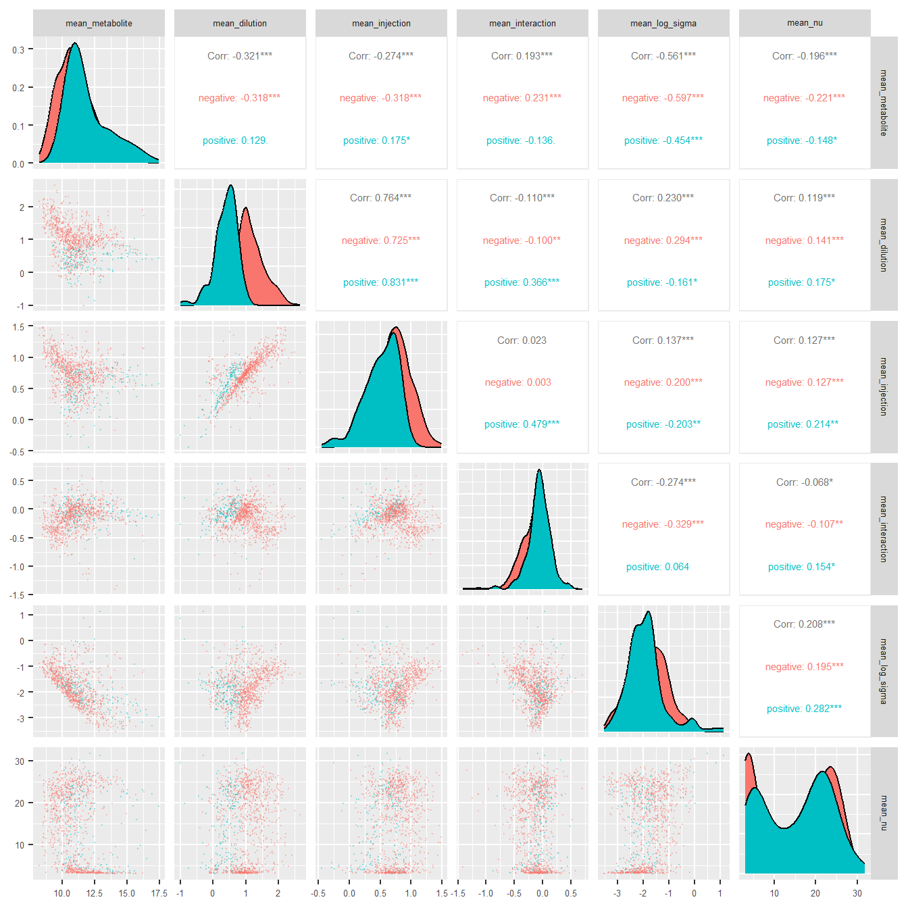
data56 %>% group_by(ionization_mode) %>%
summarize(mean(as.numeric(mean_nu<=10)))# A tibble: 2 × 2
ionization_mode `mean(as.numeric(mean_nu <= 10))`
<chr> <dbl>
1 negative 0.370
2 positive 0.342data56 %>% group_by(ionization_mode) %>%
summarize(mean(as.numeric(mean_nu<=5)))# A tibble: 2 × 2
ionization_mode `mean(as.numeric(mean_nu <= 5))`
<chr> <dbl>
1 negative 0.287
2 positive 0.179model_prediction_plots <- function(data_pred_split, data_long_split){
p61 <- data_pred_split %>%
tidyr::expand_grid(dilution_factor = c(0.25, 0.50, 1), injection_volume = c(2, 5, 10)) %>%
ungroup() %>%
mutate(logsigma = r_log_sigma +
r_sigma_dilution*log(dilution_factor/0.5) +
r_sigma_injection*log(injection_volume/5) +
r_sigma_dilution_injection_interaction*log(injection_volume/5)*log(dilution_factor/0.5)) %>%
mutate(ypred1 = r_metabolite +
r_dilution*log(dilution_factor/0.5) +
r_injection*log(injection_volume/5) +
r_dilution_injection_interaction*log(injection_volume/5)*log(dilution_factor/0.5)) %>%
mutate(ypred2 = r_metabolite +
r_dilution*log(dilution_factor/0.5) +
r_injection*log(injection_volume/5) +
r_dilution_injection_interaction*log(injection_volume/5)*log(dilution_factor/0.5) +
exp(logsigma)*rt(n(), r_nu)) %>%
mutate(log_injection_quantity = log(dilution_factor) + log(injection_volume)) %>%
ggplot(aes(x = log_injection_quantity)) +
ggdist::stat_lineribbon(aes(y = ypred2, color = ordered(dilution_factor),
fill = ordered(dilution_factor)),
.width = c(.90), alpha = 0.75) +
ggdist::stat_lineribbon(aes(y = ypred1, color = ordered(dilution_factor),
fill = ordered(dilution_factor)),
.width = c(.90), alpha = 0.25) +
geom_jitter(data = data_long_split, aes(x = log_injection_quantity,
y = log_intensity,
color = ordered(dilution_factor)),
alpha = 0.75, width = 0.05, height = 0) +
facet_wrap(.~metabolite_number_org) +
labs(x = "Injection quantity (log scale)", y = "Signal intensity (log scale)")
return(p61)
}
xdata <- readr::read_csv(here::here("data", "derived", "data-posneg.csv"))
relabeled_metabolite_numbers <- data.frame(
metabolite_number = match(xdata$metabolite_number,
unique(xdata$metabolite_number)),
metabolite_number_org = xdata$metabolite_number) %>%
distinct()
data_pred_split <- posterior::as_draws_df(model_to_plot$draws(c("r_metabolite", "r_dilution", "r_injection", "r_dilution_injection_interaction", "r_log_sigma", "r_sigma_dilution", "r_sigma_injection", "r_sigma_dilution_injection_interaction", "r_nu"))) %>%
tidybayes::spread_draws(r_metabolite[metabolite_number],
r_dilution[metabolite_number],
r_injection[metabolite_number],
r_dilution_injection_interaction[metabolite_number],
r_log_sigma[metabolite_number],
r_sigma_dilution[metabolite_number],
r_sigma_injection[metabolite_number],
r_sigma_dilution_injection_interaction[metabolite_number],
r_nu[metabolite_number]) %>%
ungroup() %>%
left_join(relabeled_metabolite_numbers) %>%
mutate(PLOTS = ids_per_plot(metabolite_number_org, 9)) %>% # 9 per subplot
split(.[["PLOTS"]])
data_long_x <- data_long
data_long_x$metabolite_number_org <- data_long_x$metabolite_number
data_long_split <- data_long_x %>%
mutate(PLOTS = ids_per_plot(metabolite_number_org, 9)) %>% # 9 per subplot
split(.[["PLOTS"]])
plots_by_id <- purrr::map2(data_pred_split,
data_long_split,
function(x, y) model_prediction_plots(x, y))
rm(data_long_x)
# save to single pdf file
ggsave(
filename = "fits.pdf",
plot = marrangeGrob(plots_by_id, nrow = 1, ncol = 1, top = NULL),
path = figures_dir)
# few examples
plots_by_id[20]$`20`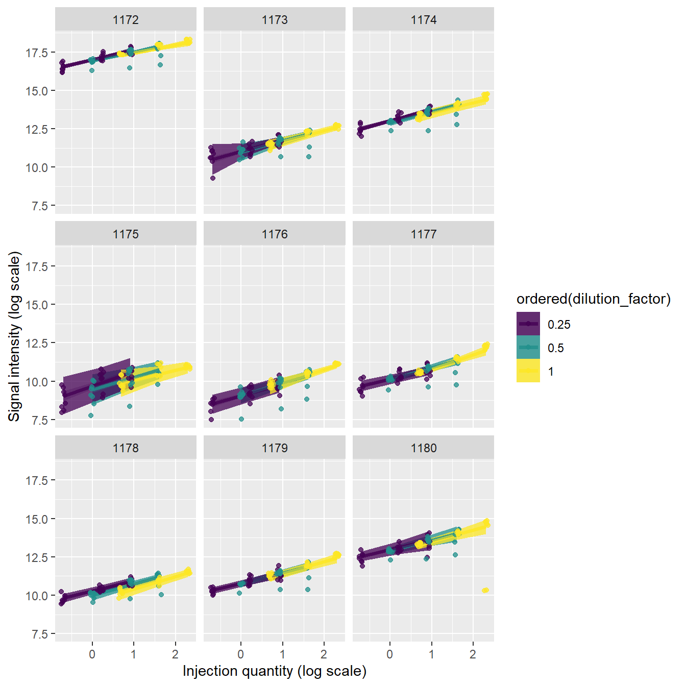
plots_by_id[23]$`23`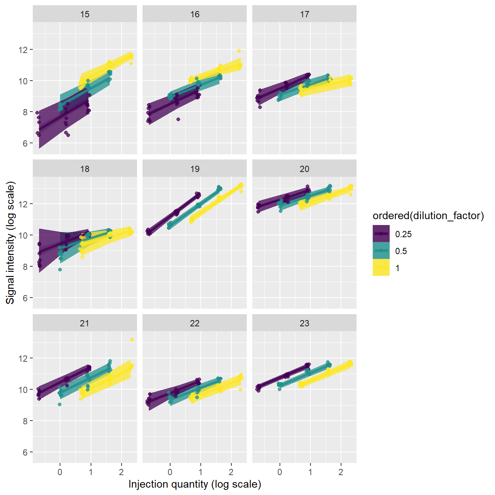
plots_by_id[121]$`121`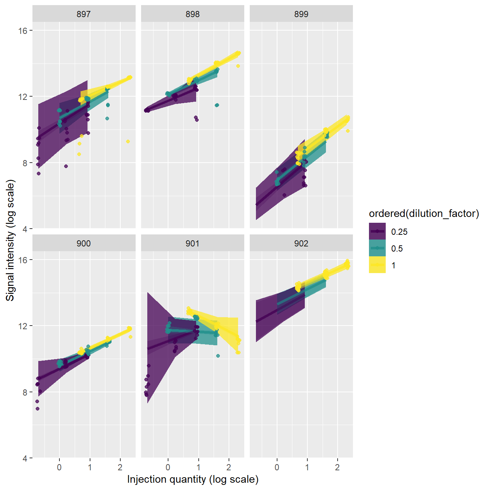
temp <- posterior::as_draws_df(model_to_plot_gq$generated_quantities)
Y_predicted <- apply(temp[, which(colnames(temp) %in% grep("^Ypred", names(temp), value = TRUE))], MARGIN = 2, FUN = quantile, probs = c(.05, .5, .95))
weighted_residuals <- apply(temp[, which(colnames(temp) %in% grep("^wres", names(temp), value = TRUE))], MARGIN = 2, FUN = quantile, probs = c(.05, .5, .95))
Y_predicted <- as.data.frame(t(Y_predicted))
weighted_residuals <- as.data.frame(t(weighted_residuals))
data_long$median_Y_predicted = Y_predicted$`50%`
data_long$median_weighted_residuals = weighted_residuals$`50%`
p71 <- ggplot(data_long, aes(x = log_intensity,
y = median_Y_predicted,
color = as.factor(metabolite_number))) +
geom_point(size = 0.5, alpha = 0.25) +
xlab("Observed Y") +
ylab("Predicted Y") +
theme(legend.position = "none") +
geom_abline(intercept = 0, slope = 1, color = "grey", linetype = "dotted")
p72 <- ggplot(data_long, aes(x = chromatogram_number,
y = median_weighted_residuals,
color = as.factor(metabolite_number))) +
geom_point(size = 0.5, alpha = 0.25) +
xlab("Measurement order") +
ylab("Weighted Residuals") +
theme(legend.position = "none") +
geom_abline(intercept = 0, slope = 0, color = "grey", linetype = "dotted")
p73 <- ggplot(data_long, aes(x = median_Y_predicted,
y = median_weighted_residuals,
color = as.factor(metabolite_number))) +
geom_point(size = 0.5, alpha = 0.25) +
xlab("Predictions") +
ylab("Weighted Residuals") +
theme(legend.position = "none") +
geom_abline(intercept = 0, slope = 0, color = "grey", linetype = "dotted")
p74 <- ggplot(data_long, aes(x = log_injection_quantity,
y = median_weighted_residuals,
color = as.factor(metabolite_number))) +
geom_point(size = 0.5, alpha = 0.25) +
xlab("log(injection*dilution") +
ylab("Weighted Residuals") +
theme(legend.position = "none") +
geom_abline(intercept = 0, slope = 0, color = "grey", linetype = "dotted")
pall71 <- (p71 + p72)/(p73 + p74)
ggsave(filename = here::here(figures_dir, "goodness_of_fit.png"),
plot = pall71, width = 12, height = 16, dpi = 600, units = "cm")
pall71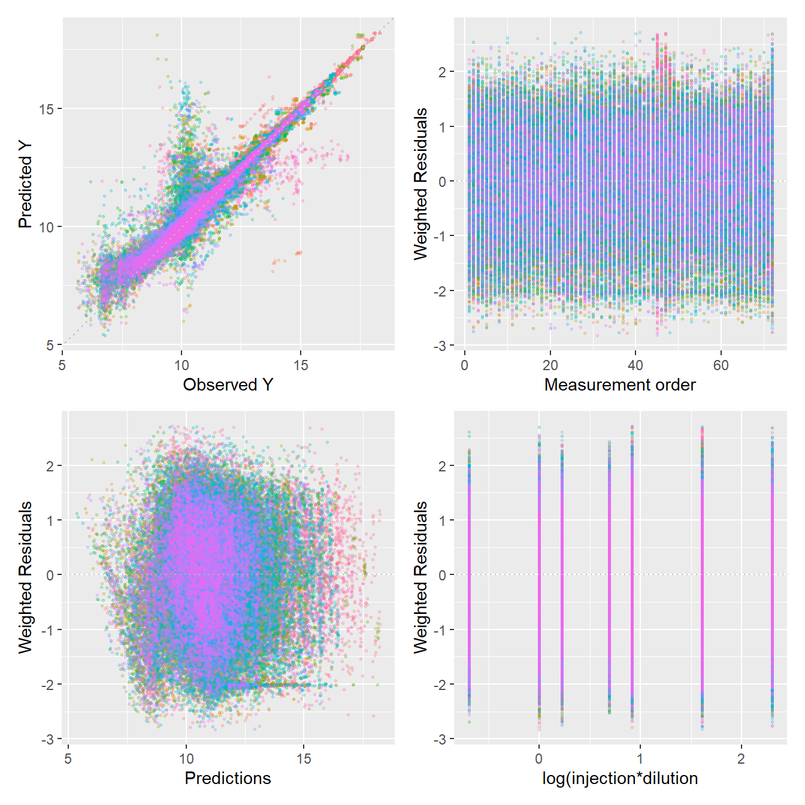
plot_residuals_by_id1 <- function(data_residuals_split){
plot <- data_residuals_split %>%
ggplot(aes(x = log_injection_quantity,
y = median_weighted_residuals,
shape = as.factor(replicate),
color = as.factor(injection_volume))) +
geom_jitter(height = 0, width = 0.025) +
labs(x = expression("injection quantity(injection volume * dilution factor on log scale)"),
y = "weighted residuals",
color = "injection_volume",
shape = "replicate") +
theme_bw() +
facet_wrap(.~metabolite_number)
return(plot)
}
data_residuals_split <- data_long %>%
mutate(PLOTS = ids_per_plot(metabolite_number, 9)) %>% # 9 per subplot
split(.[["PLOTS"]])
residuals_by_id <- purrr::map(data_residuals_split,
function(x) plot_residuals_by_id1(x))
# save to single pdf file
ggsave(
filename = "residuals1.pdf",
plot = marrangeGrob(residuals_by_id, nrow = 1, ncol = 1, top = NULL),
path = figures_dir)
# few examples
residuals_by_id[1]$`1`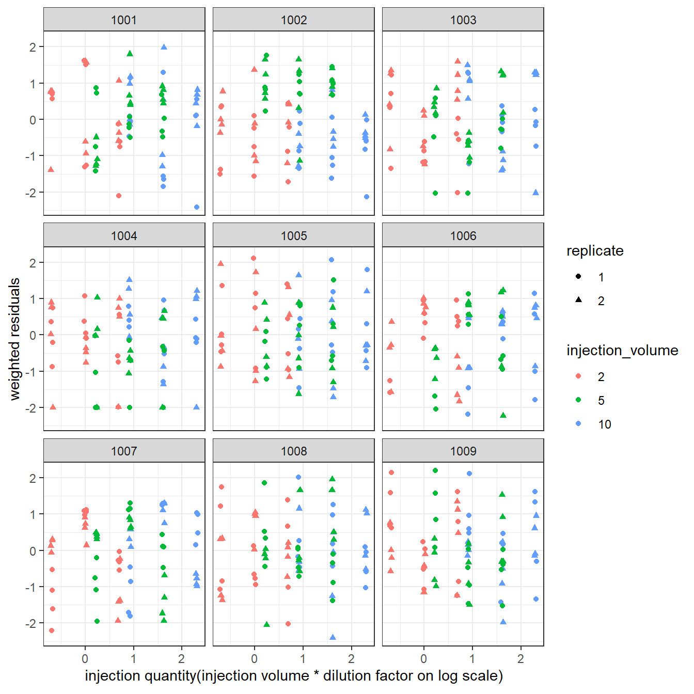
residuals_by_id[3]$`3`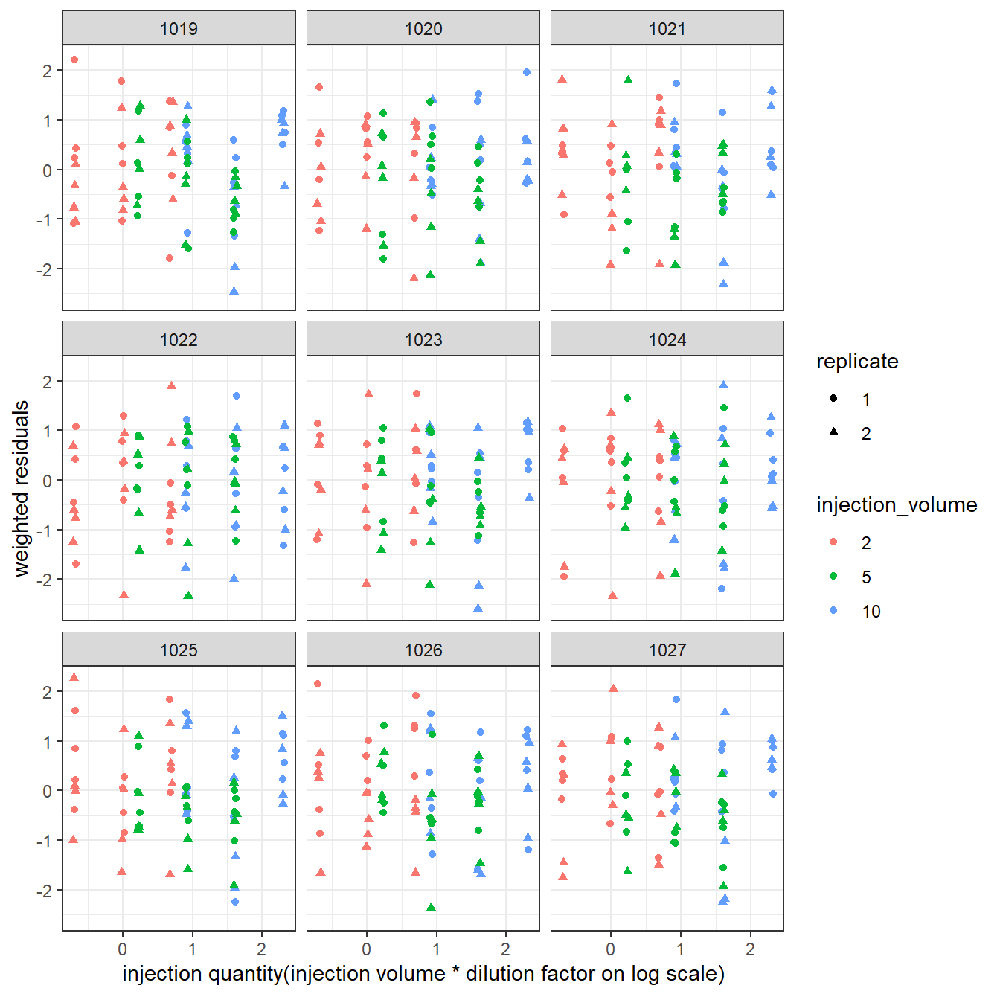
plot_residuals_by_id2 <- function(data_residuals_split){
plot <- data_residuals_split %>%
ggplot(aes(x = chromatogram_number, y = median_weighted_residuals, shape = as.factor(replicate), color = as.factor(injection_volume))) +
geom_jitter(height = 0, width = 0.025) +
labs(x = expression("order of acquisition"),
y = "weighted_residuals",
color = "injection volume",
shape = "replicate") +
theme_bw() +
facet_wrap(.~metabolite_number)
return(plot)
}
residuals_by_id2 <- purrr::map(data_residuals_split,
function(x) plot_residuals_by_id2(x))
# save to single pdf file
ggsave(
filename = "residuals2.pdf",
plot = marrangeGrob(residuals_by_id2, nrow = 1, ncol = 1, top = NULL),
path = figures_dir)
residuals_by_id2[21]$`21`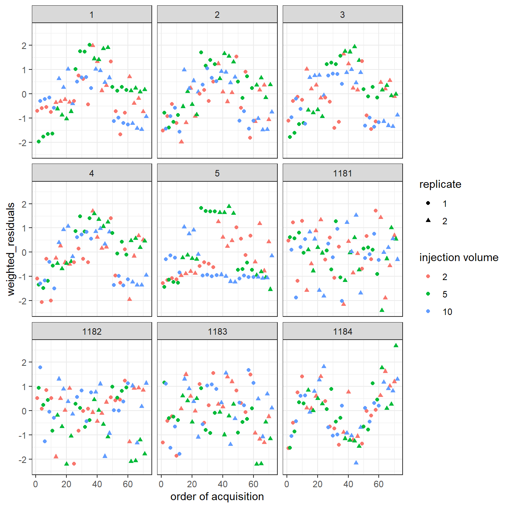
residuals_by_id2[121]$`121`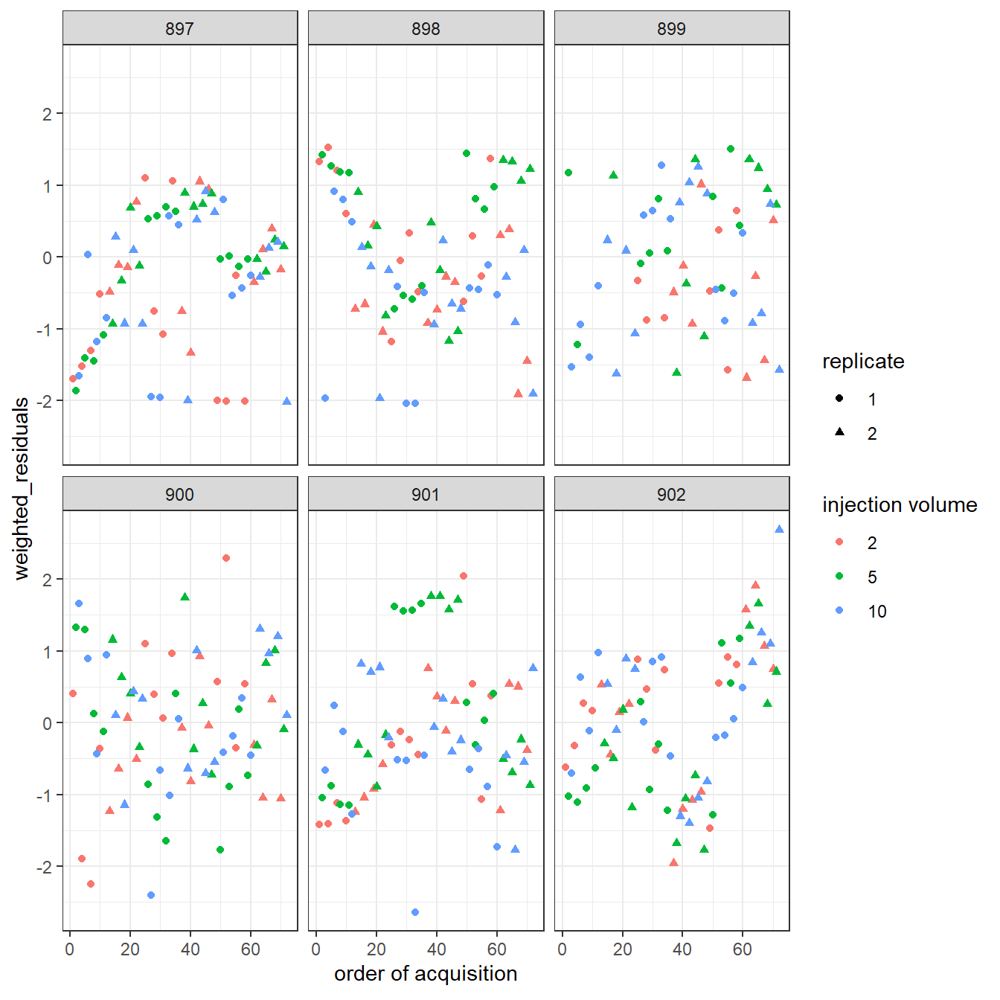
# Median weighted residuals by dilution factor
p81 <- data_long %>%
group_by(chromatogram_number,
dilution_factor,
replicate,
injection_volume,
ionization_mode) %>%
summarise(median_median_weighted_residuals =
median(median_weighted_residuals), .groups = "drop") %>%
ggplot(aes(x = dilution_factor,
y = median_median_weighted_residuals,
shape = as.factor(replicate),
color = as.factor(injection_volume))) +
geom_jitter(height = 0,
width = 0.025) +
labs(x = "Dilution factor",
y = "Median of median weighted residuals",
color = "Injection volume",
shape = "Replicate") +
theme_bw() +
facet_wrap(.~ionization_mode)
p81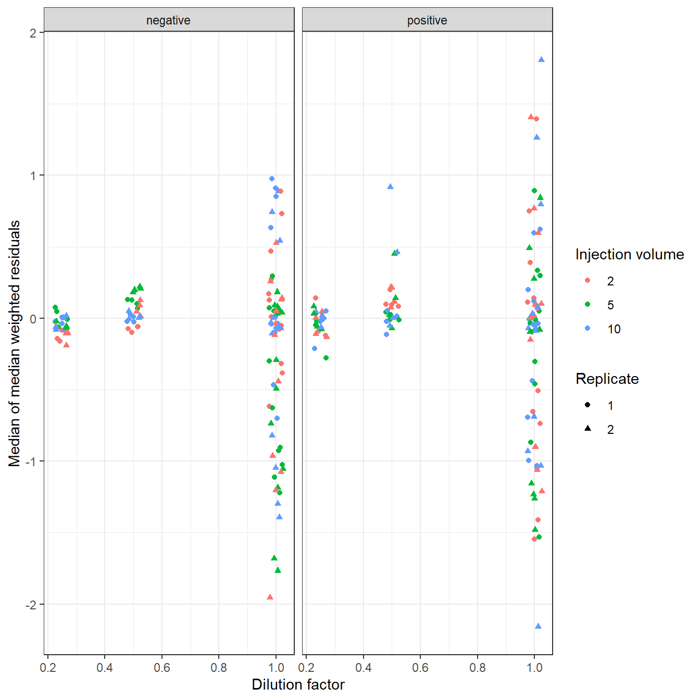
#Median residuals by chromatogram number
p82 <- data_long %>%
group_by(chromatogram_number,
dilution_factor,
replicate,
injection_volume,
ionization_mode) %>%
summarise(median_median_weighted_residuals =
median(median_weighted_residuals), .groups = "drop") %>%
ggplot() +
geom_point(aes(x = chromatogram_number,
y = median_median_weighted_residuals,
shape = as.factor(injection_volume),
color = as.factor(dilution_factor))) +
geom_line(aes(x = chromatogram_number,
y = median_median_weighted_residuals),
color = "gray") +
labs(x = "Chromatogram number",
y = "Median of median weighted residuals",
color = "Dilution factor",
shape = "Injection volume") +
theme_bw() +
facet_wrap(.~ionization_mode)
p82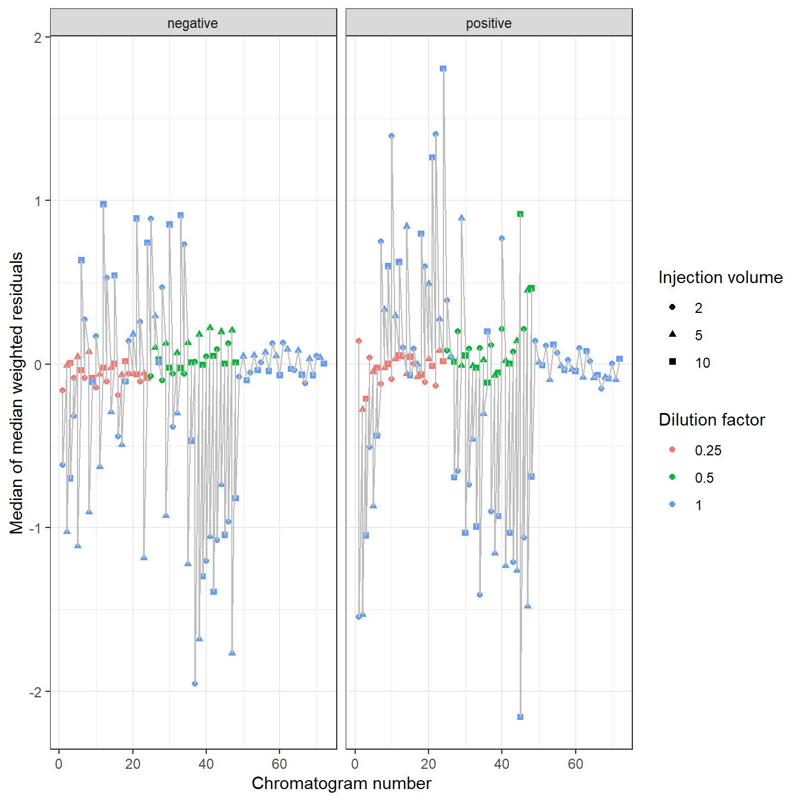
#Median residuals by internal standard
p83 <- data_long %>%
group_by(chromatogram_number,
dilution_factor,
replicate,
injection_volume,
internal_standard,
ionization_mode) %>%
summarize(median_median_weighted_residuals =
median(median_weighted_residuals), .groups = "drop") %>%
mutate(log_internal_standard =
log(internal_standard)) %>%
ggplot() +
geom_point(aes(x = log_internal_standard,
y = median_median_weighted_residuals,
shape = as.factor(injection_volume),
color = as.factor(dilution_factor))) +
geom_line(aes(x = log_internal_standard,
y = median_median_weighted_residuals),
color = "gray") +
labs(x = "Log of internal standard intensity",
y = "Median of median weighted residuals of internal standard",
color = "dilution factor",
shape = "injection volume") +
theme_bw() +
facet_wrap(.~ionization_mode)
p83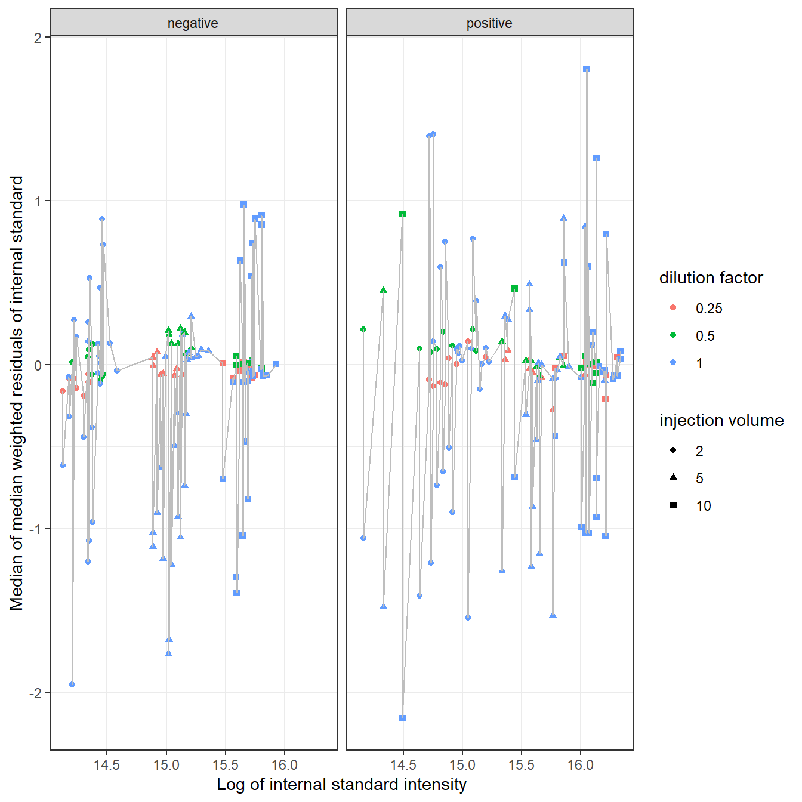
#Save the plots
ggsave(filename = here::here(figures_dir,
"median-weighted-residuals-dilution.png"),
plot = p81, width = 12, height = 16, dpi = 600, units = "cm")
ggsave(filename = here::here(figures_dir,
"median-weighted-residuals-order.png"),
plot = p82, width = 12, height = 16, dpi = 600, units = "cm")
ggsave(filename = here::here(figures_dir,
"median-weighted-residuals-internal-standard.png"),
plot = p83, width = 12, height = 16, dpi = 600, units = "cm")plot <- posterior::as_draws_df(model_to_plot$draws(c("r_metabolite", "r_dilution", "r_injection", "r_dilution_injection_interaction", "r_log_sigma", "r_nu"))) %>%
tidybayes::spread_draws(r_metabolite[metabolite_number],
r_dilution[metabolite_number],
r_injection[metabolite_number],
r_dilution_injection_interaction[metabolite_number],
r_log_sigma[metabolite_number],
r_nu[metabolite_number]) %>%
ungroup() %>%
tidyr::expand_grid(dilution_factor = seq(0.25, 1, length.out = 6),
injection_volume = c(2, 5, 10)) %>%
ungroup() %>%
mutate(ionization_mode = if_else(metabolite_number <= 184,
"positive", "negative")) %>%
mutate(Y_predicted = r_metabolite +
r_dilution*log(dilution_factor/0.5) +
r_injection*log(injection_volume/5) +
r_dilution_injection_interaction*log(injection_volume/5)*log(dilution_factor/0.5)) %>%
group_by(metabolite_number,
dilution_factor,
injection_volume,
ionization_mode) %>%
summarise(mean_Y_predicted = mean(Y_predicted)) %>%
ggplot(aes(x = dilution_factor, y = mean_Y_predicted, color = as.factor(metabolite_number))) +
geom_line() +
facet_grid(injection_volume~ionization_mode) +
labs(x = "Dilution factor",
y = "Predicted intensity (log scale)") +
theme(legend.position = "none")
plot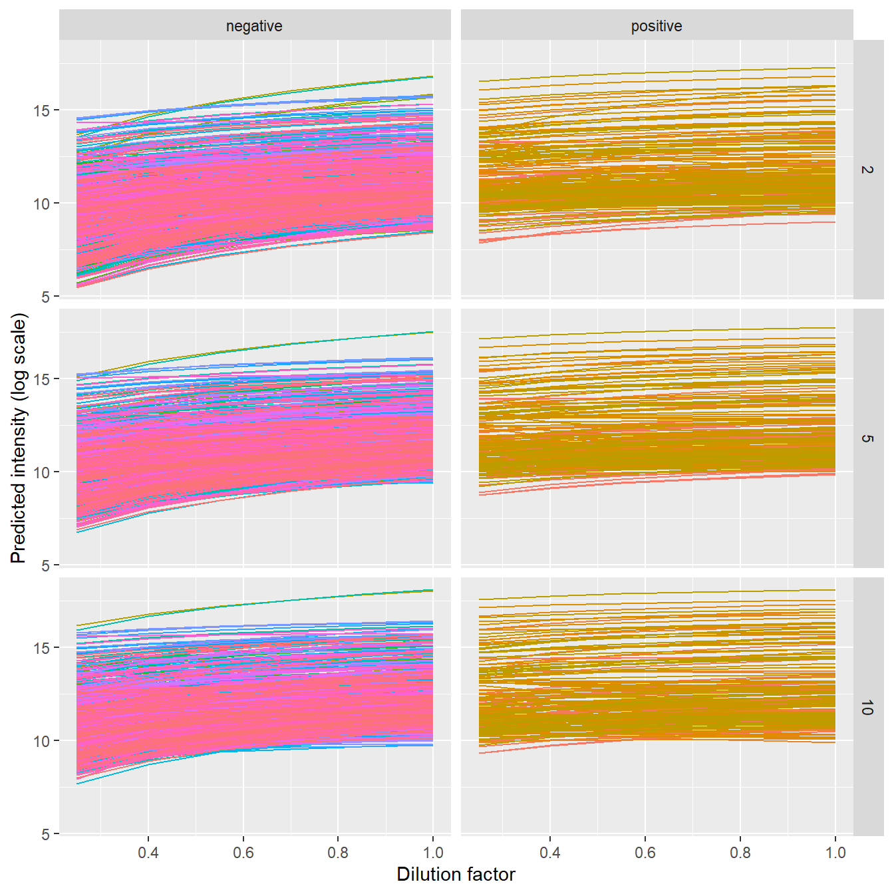
ggsave(filename = here::here(figures_dir, "simulations.png"), plot = plot, width = 12, height = 16, dpi = 600, units = "cm")dilution_factor_sim = seq(0.25, 1, length.out = 10)
injection_volume_sim = seq(2.5, 10, length.out = 10)
posneg = c("positive", "negative")
performance_simulation <- posterior::as_draws_df(
decision_to_plot_gq$generated_quantities) %>%
tidybayes::spread_draws(
SVR[i,j,c],pSVR[i,j,c]) %>%
ungroup()
design_summary <- performance_simulation %>%
group_by(i,j,c) %>%
summarise(
mean_metric = mean(SVR),
proportion_metabolites = mean(pSVR),
.groups = "drop")
design_summary$dilution_factor_sim = dilution_factor_sim[design_summary$i]
design_summary$injection_volume_sim = injection_volume_sim[design_summary$j]
design_summary$ionization_mode = posneg[design_summary$c]
p_mean <- ggplot(
design_summary,
aes(x = dilution_factor_sim, y = injection_volume_sim, z = mean_metric)) +
geom_contour_filled(bins = 10) +
facet_wrap(~ ionization_mode) +
#scale_fill_viridis_c(name = "Mean\nmetric") +
labs(
x = "Dilution factor",
y = "Injection volume",
fill = "SVR",
title = "Sensitivity-to-variability ratio")
p_prop <- ggplot(
design_summary,
aes(x = dilution_factor_sim,
y = injection_volume_sim,
z = proportion_metabolites)) +
geom_contour_filled(bins = 10) +
facet_wrap(~ ionization_mode) +
labs(
x = "Dilution factor",
y = "Injection volume",
fill = "pSVR",
title = "Proportion of Features Quantifiable at Two-Fold Difference")
p_perf_2x2 <- p_mean / p_prop + plot_layout(guides = "collect")
p_perf_2x2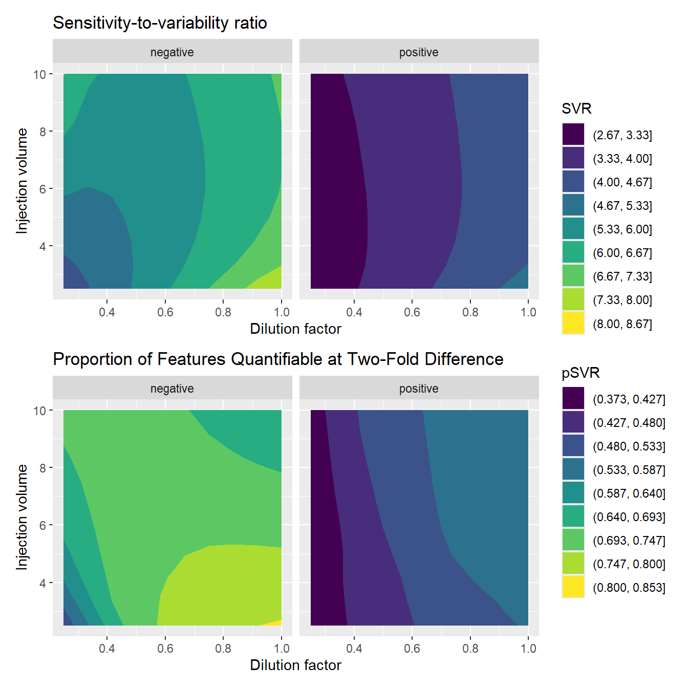
ggsave(
filename = here::here(figures_dir, "performance-metric-grid.png"),
plot = p_perf_2x2,
width = 14,
height = 18,
dpi = 600,
units = "cm")target_dilutions <- c(0.25, 0.5, 1.0)
target_injections <- c(2.5, 5, 10)
levels_new = c(
"Dil = 0.25, Inj = 10",
"Dil = 0.5, Inj = 10",
"Dil = 1, Inj = 10",
"Dil = 0.25, Inj = 5",
"Dil = 0.5, Inj = 5",
"Dil = 1, Inj = 5",
"Dil = 0.25, Inj = 2.5",
"Dil = 0.5, Inj = 2.5",
"Dil = 1, Inj = 2.5")
#
performance_subset <- posterior::as_draws_df(
decision_to_plot_gq$generated_quantities) %>%
tidybayes::spread_draws(
svrm[i,j,m]) %>%
ungroup()
performance_subset <- performance_subset %>%
mutate(ionization_mode = if_else(m <= 184,
"positive", "negative"))
#
performance_pos <- performance_subset %>%
dplyr::filter(ionization_mode == "positive")
performance_pos_hist = performance_pos %>%
group_by(i,j,m) %>%
summarise(mean_performance_metric = mean(svrm))
performance_pos_hist$dilution_factor = target_dilutions[performance_pos_hist$i]
performance_pos_hist$injection_volume = target_injections[performance_pos_hist$j]
performance_pos_hist <- performance_pos_hist %>%
mutate(
design_label = glue("Dil = {dilution_factor}, Inj = {injection_volume}"),
design_label = factor(design_label, levels = levels_new))
#
counts_pos <- performance_pos %>%
group_by(i,j,.draw) %>%
summarise(
n_total = n(),
n_above = sum(svrm > 2/log(2)),
prop_above = n_above/n_total,
.groups = "drop") %>%
group_by(i,j) %>%
summarise(
n_total = mean(n_total),
n_above = mean(n_above),
prop_above = mean(prop_above),
.groups = "drop") %>%
mutate(
label = paste0(round(n_above,0),
" (", percent(prop_above, accuracy = 1), ")"))
#
counts_pos$dilution_factor = target_dilutions[counts_pos$i]
counts_pos$injection_volume = target_injections[counts_pos$j]
counts_pos <- counts_pos %>%
mutate(
design_label = glue("Dil = {dilution_factor}, Inj = {injection_volume}"),
design_label = factor(design_label, levels = levels_new))
performance_histogram_pos <- ggplot(
performance_pos_hist,
aes(x = mean_performance_metric)) +
geom_histogram(bins = 30, alpha = 0.7, color = "black") +
geom_vline(xintercept = 2/log(2), linetype = "dashed", color = "red") +
facet_wrap(~ design_label, ncol = 3, scales = "fixed") +
geom_text(
data = counts_pos,
aes(x = -Inf, y = Inf, label = label),
hjust = -0.05, vjust = 1.1,
inherit.aes = FALSE,
size = 3) +
labs(
x = "Sensitivity-to-variability ratio",
y = "Number of metabolites",
title = "Positive ionization mode:\nperformance metric across metabolites")
#
performance_histogram_pos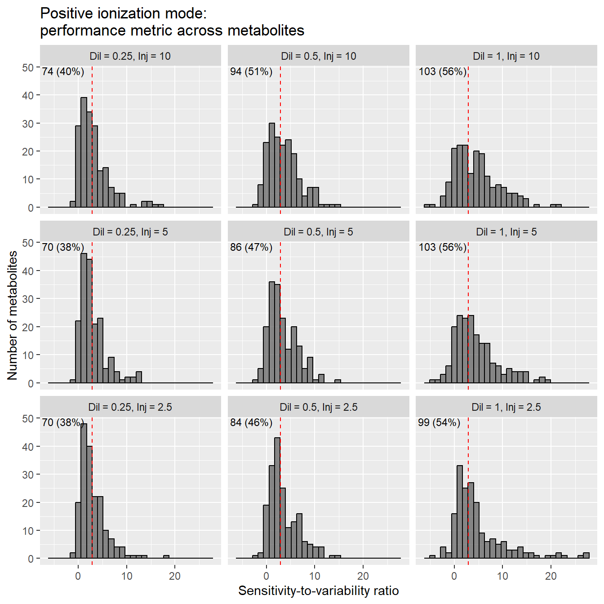
#
ggsave(
filename = here::here(figures_dir, "performance-histograms-positive.png"),
plot = performance_histogram_pos,
width = 18,
height = 12,
dpi = 600,
units = "cm"
)
#
#
performance_neg <- performance_subset %>%
filter(ionization_mode == "negative")
performance_neg_hist = performance_neg %>%
group_by(i,j,m) %>%
summarise(mean_performance_metric = mean(svrm))
performance_neg_hist$dilution_factor = target_dilutions[performance_neg_hist$i]
performance_neg_hist$injection_volume = target_injections[performance_neg_hist$j]
performance_neg_hist <- performance_neg_hist %>%
mutate(
design_label = glue("Dil = {dilution_factor}, Inj = {injection_volume}"),
design_label = factor(design_label, levels = levels_new))
#
counts_neg <- performance_neg %>%
group_by(i,j,.draw) %>%
summarise(
n_total = n(),
n_above = sum(svrm > 2/log(2)),
prop_above = n_above/n_total,
.groups = "drop") %>%
group_by(i,j) %>%
summarise(
n_total = mean(n_total),
n_above = mean(n_above),
prop_above = mean(prop_above),
.groups = "drop") %>%
mutate(
label = paste0(round(n_above,0),
" (", percent(prop_above, accuracy = 1), ")"))
#
counts_neg$dilution_factor = target_dilutions[counts_neg$i]
counts_neg$injection_volume = target_injections[counts_neg$j]
counts_neg <- counts_neg %>%
mutate(
design_label = glue("Dil = {dilution_factor}, Inj = {injection_volume}"),
design_label = factor(design_label, levels = levels_new))
performance_histogram_neg <- ggplot(
performance_neg_hist,
aes(x = mean_performance_metric)) +
geom_histogram(bins = 30, alpha = 0.7, color = "black") +
geom_vline(xintercept = 2/log(2), linetype = "dashed", color = "red") +
facet_wrap(~ design_label, ncol = 3, scales = "fixed") +
geom_text(
data = counts_neg,
aes(x = -Inf, y = Inf, label = label),
hjust = -0.05, vjust = 1.1,
inherit.aes = FALSE,
size = 3) +
labs(
x = "Sensitivity-to-variability ratio",
y = "Number of metabolites",
title = "Negative ionization mode:\nperformance metric across metabolites")
#
performance_histogram_neg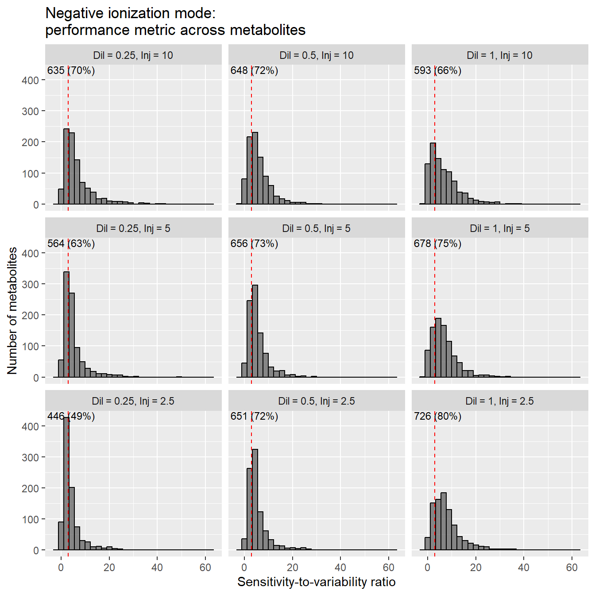
#
ggsave(
filename = here::here(figures_dir, "performance-histograms-negative.png"),
plot = performance_histogram_neg,
width = 18,
height = 12,
dpi = 600,
units = "cm"
)